<!DOCTYPE html><html lang="az"><head><meta charset="UTF-8"><meta name="viewport" content="width=device-width,initial-scale=1"><meta http-equiv="X-UA-Compatible" content="ie=edge"><title>Allahverən Məmmədov</title><link rel="shortcut icon" href="images/favicon.ico"><link rel="icon" type="image/png" sizes="192x192" href="images/android-icon-192x192.png"><link rel="icon" type="image/png" sizes="32x32" href="images/favicon-32x32.png"><link rel="icon" type="image/png" sizes="96x96" href="images/favicon-96x96.png"><link rel="icon" type="image/png" sizes="16x16" href="images/favicon-16x16.png"><link rel="manifest" href="/assets/favicon/manifest.json"><link rel="stylesheet" href="css/tailwind.css"></head><body class="result-page"><button class="result-nav-toggle" id="navToggle">Suallar</button><div class="result-sidebar-overlay" id="sidebarOverlay"></div><aside class="result-sidebar" id="sidebar"><button class="result-sidebar-close" id="sidebarClose">�</button><ul class="exam-summary"><li class="exam-summary__subject"><h3 class="exam-summary__name">Riyaziyyat</h3><ul class="exam-summary__questions"><li><a href="#q356105" class="exam-summary__question right"></a></li><li><a href="#q356122" class="exam-summary__question wrong"></a></li><li><a href="#q356112" class="exam-summary__question wrong"></a></li><li><a href="#q356093" class="exam-summary__question right"></a></li><li><a href="#q356097" class="exam-summary__question right"></a></li><li><a href="#q356110" class="exam-summary__question wrong"></a></li><li><a href="#q356128" class="exam-summary__question wrong"></a></li><li><a href="#q356106" class="exam-summary__question wrong"></a></li><li><a href="#q356108" class="exam-summary__question wrong"></a></li><li><a href="#q356099" class="exam-summary__question wrong"></a></li><li><a href="#q356100" class="exam-summary__question right"></a></li><li><a href="#q356103" class="exam-summary__question wrong"></a></li><li><a href="#q356130" class="exam-summary__question right"></a></li><li><a href="#q356114" class="exam-summary__question wrong"></a></li><li><a href="#q356124" class="exam-summary__question right"></a></li><li><a href="#q356095" class="exam-summary__question wrong"></a></li><li><a href="#q356091" class="exam-summary__question wrong"></a></li><li><a href="#q356120" class="exam-summary__question wrong"></a></li><li><a href="#q356107" class="exam-summary__question right"></a></li><li><a href="#q356117" class="exam-summary__question wrong"></a></li><li><a href="#q356127" class="exam-summary__question wrong"></a></li><li><a href="#q356111" class="exam-summary__question wrong"></a></li><li><a href="#q356134" class="exam-summary__question wrong"></a></li><li><a href="#q356137" class="exam-summary__question empty"></a></li><li><a href="#q356132" class="exam-summary__question empty"></a></li><li><a href="#q356140" class="exam-summary__question wrong"></a></li><li><a href="#q356143" class="exam-summary__question wrong"></a></li><li><a href="#q356153" class="exam-summary__question empty"></a></li><li><a href="#q356155" class="exam-summary__question empty"></a></li><li><a href="#q356159" class="exam-summary__question wrong"></a></li></ul></li><li class="exam-summary__subject"><h3 class="exam-summary__name">Fizika</h3><ul class="exam-summary__questions"><li><a href="#q356163" class="exam-summary__question right"></a></li><li><a href="#q355294" class="exam-summary__question wrong"></a></li><li><a href="#q354570" class="exam-summary__question right"></a></li><li><a href="#q355000" class="exam-summary__question right"></a></li><li><a href="#q354700" class="exam-summary__question right"></a></li><li><a href="#q354594" class="exam-summary__question right"></a></li><li><a href="#q354630" class="exam-summary__question wrong"></a></li><li><a href="#q356170" class="exam-summary__question right"></a></li><li><a href="#q355151" class="exam-summary__question right"></a></li><li><a href="#q354581" class="exam-summary__question wrong"></a></li><li><a href="#q354944" class="exam-summary__question wrong"></a></li><li><a href="#q354653" class="exam-summary__question wrong"></a></li><li><a href="#q355152" class="exam-summary__question wrong"></a></li><li><a href="#q354614" class="exam-summary__question wrong"></a></li><li><a href="#q356182" class="exam-summary__question right"></a></li><li><a href="#q355157" class="exam-summary__question wrong"></a></li><li><a href="#q356190" class="exam-summary__question right"></a></li><li><a href="#q354946" class="exam-summary__question wrong"></a></li><li><a href="#q355155" class="exam-summary__question wrong"></a></li><li><a href="#q355154" class="exam-summary__question wrong"></a></li><li><a href="#q355237" class="exam-summary__question wrong"></a></li><li><a href="#q356168" class="exam-summary__question wrong"></a></li><li><a href="#q356230" class="exam-summary__question wrong"></a></li><li><a href="#q356220" class="exam-summary__question wrong"></a></li><li><a href="#q356206" class="exam-summary__question wrong"></a></li><li><a href="#q356209" class="exam-summary__question empty"></a></li><li><a href="#q356232" class="exam-summary__question wrong"></a></li><li><a href="#q356310" class="exam-summary__question empty"></a></li><li><a href="#q357286" class="exam-summary__question empty"></a></li><li><a href="#q356234" class="exam-summary__question empty"></a></li></ul></li><li class="exam-summary__subject"><h3 class="exam-summary__name">İnformatika</h3><ul class="exam-summary__questions"><li><a href="#q360208" class="exam-summary__question wrong"></a></li><li><a href="#q360193" class="exam-summary__question right"></a></li><li><a href="#q360191" class="exam-summary__question right"></a></li><li><a href="#q360180" class="exam-summary__question wrong"></a></li><li><a href="#q360201" class="exam-summary__question wrong"></a></li><li><a href="#q360176" class="exam-summary__question right"></a></li><li><a href="#q360198" class="exam-summary__question wrong"></a></li><li><a href="#q360224" class="exam-summary__question right"></a></li><li><a href="#q360166" class="exam-summary__question right"></a></li><li><a href="#q360172" class="exam-summary__question right"></a></li><li><a href="#q360178" class="exam-summary__question right"></a></li><li><a href="#q360169" class="exam-summary__question wrong"></a></li><li><a href="#q360204" class="exam-summary__question wrong"></a></li><li><a href="#q360226" class="exam-summary__question wrong"></a></li><li><a href="#q360227" class="exam-summary__question wrong"></a></li><li><a href="#q360196" class="exam-summary__question wrong"></a></li><li><a href="#q360174" class="exam-summary__question right"></a></li><li><a href="#q360212" class="exam-summary__question wrong"></a></li><li><a href="#q360181" class="exam-summary__question wrong"></a></li><li><a href="#q360190" class="exam-summary__question wrong"></a></li><li><a href="#q360216" class="exam-summary__question wrong"></a></li><li><a href="#q360223" class="exam-summary__question wrong"></a></li><li><a href="#q360233" class="exam-summary__question right"></a></li><li><a href="#q360230" class="exam-summary__question empty"></a></li><li><a href="#q360234" class="exam-summary__question wrong"></a></li><li><a href="#q360232" class="exam-summary__question empty"></a></li><li><a href="#q360235" class="exam-summary__question empty"></a></li><li><a href="#q360241" class="exam-summary__question empty"></a></li><li><a href="#q360239" class="exam-summary__question empty"></a></li><li><a href="#q360238" class="exam-summary__question wrong"></a></li></ul></li></ul></aside><article class="result-main"><div class="result-container"><div class="result-header"><h1 class="result-student">Ömər İbrahimli</h1><h2 class="result-exam">İmtahan: Blok fənləri üzrə Sınaq imtahanı №3 (2026-02-15)</h2><h3 class="result-score">Yekun nəticə: 277.4 / Maksimum: 400  <b>Rİ</b></h3></div><h3 class="result-answer-sheets-title">Cavab kartının qrafik təsviri:</h3><ul class="result-answer-sheets"><li><a href="/answer-sheets/2026/02/20260215/1088078-X7520260215142041-00000169-1-3602_41,39,38.jpg" target="_blank"></a></li><li><a href="/answer-sheets/2026/02/20260215/1088078-X7520260215142041-00000170-1-35615_3,5,9.jpg" target="_blank"></a></li><li><a href="/answer-sheets/2026/02/20260215/1088078-X7520260215142041-00000170-2-35_6310,7286,6234.jpg" target="_blank"></a></li><li><a href="/answer-sheets/2026/02/20260215/1088078.jpg" target="_blank">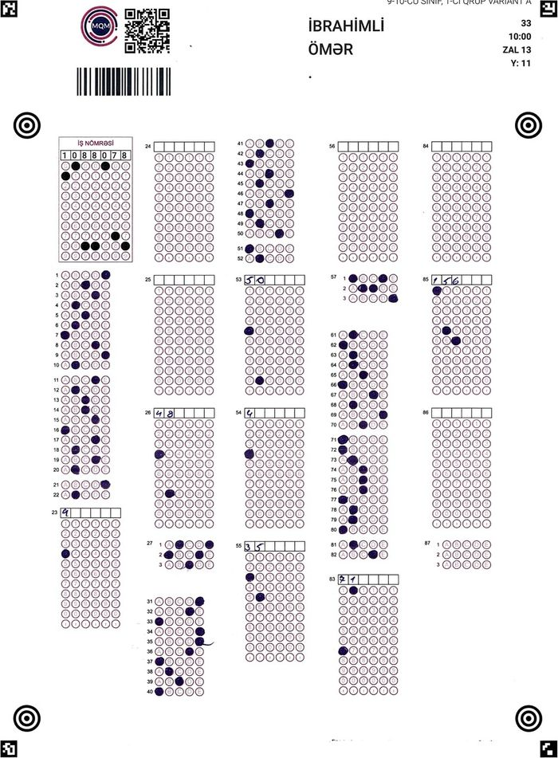</a></li></ul><ul class="result-subjects"><li class="result-subject"><h3 class="result-subject-name">Riyaziyyat (Maksimum: 150)</h3><div class="result-subject-stats"><div>Doğru cavabların sayı: <strong>13</strong></div><div>Yanlış cavabların sayı: <strong>17</strong></div><div>Nəticə: <strong>74.7</strong></div></div><ul class="result-questions"><li id="q356105" class="result-question right"><div class="result-question-body"><p><math xmlns="http://www.w3.org/1998/Math/MathML"><mi>a</mi><mo>=</mo><mn>5</mn><mo>,</mo><mn>52</mn></math>�və�<math xmlns="http://www.w3.org/1998/Math/MathML"><mi>b</mi><mo>=</mo><mn>2</mn><mfrac><mn>13</mn><mn>25</mn></mfrac></math>�olarsa,�<math xmlns="http://www.w3.org/1998/Math/MathML"><msup><mi>a</mi><mn>2</mn></msup><mo>(</mo><mi>a</mi><mo>-</mo><mn>3</mn><mi>b</mi><mo>)</mo><mo>-</mo><msup><mi>b</mi><mn>2</mn></msup><mo>(</mo><mi>b</mi><mo>-</mo><mn>3</mn><mi>a</mi><mo>)</mo></math>�ifadəsinin qiymətini hesablayın.</p></div><div class="result-question-answer">Verilmiş Cavab:<p>27</p></div><div class="result-question-right">Doğru cavab:<p>27</p></div></li><li id="q356122" class="result-question wrong"><div class="result-question-body"><p>Aşağıdakılardan hansı�<math xmlns="http://www.w3.org/1998/Math/MathML"><msup><mi>a</mi><mn>4</mn></msup><mi>b</mi><mo>-</mo><mi>a</mi><mi>b</mi></math>�çoxhədlisinin vuruqlarından biri <strong>deyil</strong>?</p></div><div class="result-question-answer">Verilmiş Cavab:<p><math xmlns="http://www.w3.org/1998/Math/MathML"><msup><mi>a</mi><mn>2</mn></msup><mo>+</mo><mi>a</mi><mo>+</mo><mn>1</mn></math></p></div><div class="result-question-right">Doğru cavab:<p><math xmlns="http://www.w3.org/1998/Math/MathML"><msup><mi>a</mi><mn>2</mn></msup><mo>-</mo><mi>a</mi><mo>+</mo><mn>1</mn></math></p></div></li><li id="q356112" class="result-question wrong"><div class="result-question-body"><p><math xmlns="http://www.w3.org/1998/Math/MathML"><mi>a</mi><mo>=</mo><msqrt><mn>3</mn></msqrt></math>,�<math xmlns="http://www.w3.org/1998/Math/MathML"><mi>b</mi><mo>=</mo><mroot><mn>6</mn><mn>3</mn></mroot></math>�və�<math xmlns="http://www.w3.org/1998/Math/MathML"><mi>c</mi><mo>=</mo><mroot><mn>9</mn><mn>4</mn></mroot></math>�ədədlərini müqayisə edin.</p></div><div class="result-question-answer">Verilmiş Cavab:<p><math xmlns="http://www.w3.org/1998/Math/MathML"><mi>c</mi><mo><</mo><mi>b</mi><mo><</mo><mi>a</mi></math></p></div><div class="result-question-right">Doğru cavab:<p><math xmlns="http://www.w3.org/1998/Math/MathML"><mi>a</mi><mo>=</mo><mi>c</mi><mo><</mo><mi>b</mi></math></p></div></li><li id="q356093" class="result-question right"><div class="result-question-body"><p>Böyük diaqonalının uzunluğu�<math xmlns="http://www.w3.org/1998/Math/MathML"><mn>9</mn><mo>�</mo><mi>s</mi><mi>m</mi></math>�olan düzgün altıbucaqlının perimetrini tapın.</p></div><div class="result-question-answer">Verilmiş Cavab:<p><math xmlns="http://www.w3.org/1998/Math/MathML"><mn>27</mn><mo>�</mo><mi>s</mi><mi>m</mi></math></p></div><div class="result-question-right">Doğru cavab:<p><math xmlns="http://www.w3.org/1998/Math/MathML"><mn>27</mn><mo>�</mo><mi>s</mi><mi>m</mi></math></p></div></li><li id="q356097" class="result-question right"><div class="result-question-body"><p><math xmlns="http://www.w3.org/1998/Math/MathML"><mi>m</mi></math>-in hansı qiymətində�<math xmlns="http://www.w3.org/1998/Math/MathML"><mfrac><mrow><mn>5</mn><mi>m</mi><mo>-</mo><mn>4</mn></mrow><mrow><mn>4</mn><mi>m</mi><mo>+</mo><mn>3</mn></mrow></mfrac></math>�və�<math xmlns="http://www.w3.org/1998/Math/MathML"><mfrac><mrow><mn>4</mn><mi>m</mi><mo>+</mo><mn>3</mn></mrow><mrow><mn>5</mn><mi>m</mi><mo>-</mo><mn>4</mn></mrow></mfrac></math>�kəsrlərindən hər ikisinin qiyməti natural ədəd olar?</p></div><div class="result-question-answer">Verilmiş Cavab:<p>7</p></div><div class="result-question-right">Doğru cavab:<p>7</p></div></li><li id="q356110" class="result-question wrong"><div class="result-question-body"><p>Radiusu�<math xmlns="http://www.w3.org/1998/Math/MathML"><mn>6</mn></math>-ya bərabər olan çevrədə�<math xmlns="http://www.w3.org/1998/Math/MathML"><mo>∠</mo><mi>B</mi><mi>A</mi><mi>C</mi><mo>=</mo><mn>15</mn><mo>°</mo></math>,�<math xmlns="http://www.w3.org/1998/Math/MathML"><mo>∠</mo><mi>A</mi><mi>B</mi><mi>D</mi><mo>=</mo><mn>45</mn><mo>°</mo></math>�olarsa,�<math xmlns="http://www.w3.org/1998/Math/MathML"><mover><mrow><mi>B</mi><mi>m</mi><mi>D</mi></mrow><mo>⌣</mo></mover></math>�və�<math xmlns="http://www.w3.org/1998/Math/MathML"><mover><mrow><mi>A</mi><mi>n</mi><mi>C</mi></mrow><mo>⌣</mo></mover></math>�qövslərinin uzunluqları cəmini tapın.</p><figure class="image">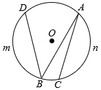</figure></div><div class="result-question-answer">Verilmiş Cavab:<p><math xmlns="http://www.w3.org/1998/Math/MathML"><mn>4</mn><mi>π</mi></math></p></div><div class="result-question-right">Doğru cavab:<p><math xmlns="http://www.w3.org/1998/Math/MathML"><mn>8</mn><mi>π</mi></math></p></div></li><li id="q356128" class="result-question wrong"><div class="result-question-body"><p>Oturacağı�<math xmlns="http://www.w3.org/1998/Math/MathML"><mn>10</mn><msqrt><mn>3</mn></msqrt></math>, bucaqlarından biri�<math xmlns="http://www.w3.org/1998/Math/MathML"><mn>120</mn><mo>°</mo></math>�olan bərabəryanlı üçbucağın�yan tərəfinin uzunluğunu tapın.</p></div><div class="result-question-answer">Verilmiş Cavab:<p><math xmlns="http://www.w3.org/1998/Math/MathML"><mn>5</mn><msqrt><mn>3</mn></msqrt></math></p></div><div class="result-question-right">Doğru cavab:<p><math xmlns="http://www.w3.org/1998/Math/MathML"><mn>10</mn></math></p></div></li><li id="q356106" class="result-question wrong"><div class="result-question-body"><p>Parça dörd hissəyə bölünüb. Birinci və dördüncü hissələrin ortaları arasındakı məsafə�<math xmlns="http://www.w3.org/1998/Math/MathML"><mn>90</mn><mo>�</mo><mi>s</mi><mi>m</mi></math>, ikinci və üçüncü hissələrin ortaları arasındakı məsafə�isə�<math xmlns="http://www.w3.org/1998/Math/MathML"><mn>35</mn><mo>�</mo><mi>s</mi><mi>m</mi></math>�olarsa, parçanın uzunluğunu tapın.</p></div><div class="result-question-answer">Verilmiş Cavab:<p><math xmlns="http://www.w3.org/1998/Math/MathML"><mn>115</mn><mo>�</mo><mi>s</mi><mi>m</mi></math></p></div><div class="result-question-right">Doğru cavab:<p><math xmlns="http://www.w3.org/1998/Math/MathML"><mn>110</mn><mo>�</mo><mi>s</mi><mi>m</mi></math></p></div></li><li id="q356108" class="result-question wrong"><div class="result-question-body"><p><math xmlns="http://www.w3.org/1998/Math/MathML"><msup><mi>x</mi><mn>2</mn></msup><mo>+</mo><mfenced><mrow><mi>a</mi><mo>-</mo><mn>7</mn></mrow></mfenced><mi>x</mi><mo>-</mo><mn>4</mn><mi>a</mi><mo>+</mo><mn>3</mn><mo>=</mo><mn>0</mn></math>�tənliyinin kökləri qarşılıqlı əks ədədlər olarsa, onun böyük kökünü tapın.</p></div><div class="result-question-answer">Verilmiş Cavab:<p>8</p></div><div class="result-question-right">Doğru cavab:<p>5</p></div></li><li id="q356099" class="result-question wrong"><div class="result-question-body"><p><math xmlns="http://www.w3.org/1998/Math/MathML"><mn>0</mn><mo>,</mo><mn>21</mn></math>; <math xmlns="http://www.w3.org/1998/Math/MathML"><mn>3</mn><mo>,</mo><mn>2</mn><mfenced><mn>1</mn></mfenced></math>�və�<math xmlns="http://www.w3.org/1998/Math/MathML"><mn>3</mn><mo>,</mo><mfenced><mn>21</mn></mfenced></math>�ədədlər sırasının ən böyük fərqini tapın.</p></div><div class="result-question-answer">Verilmiş Cavab:<p><math xmlns="http://www.w3.org/1998/Math/MathML"><mn>3</mn><mo>,</mo><mn>0</mn><mo>(</mo><mn>21</mn><mo>)</mo></math></p></div><div class="result-question-right">Doğru cavab:<p><math xmlns="http://www.w3.org/1998/Math/MathML"><mn>3</mn><mo>,</mo><mn>00</mn><mo>(</mo><mn>21</mn><mo>)</mo></math></p></div></li><li id="q356100" class="result-question right"><div class="result-question-body"><p>Dəyişənin hansı mənfi qiymətində�<math xmlns="http://www.w3.org/1998/Math/MathML"><mfrac><mrow><mfenced><mrow><mn>2</mn><mi>x</mi><mo>-</mo><mn>6</mn></mrow></mfenced><mo>(</mo><mi>x</mi><mo>+</mo><mn>5</mn><mo>)</mo></mrow><mrow><mfenced><mrow><mn>1</mn><mo>-</mo><mn>2</mn><mi>x</mi></mrow></mfenced><mfenced><mrow><mi>x</mi><mo>+</mo><mn>1</mn><mo>,</mo><mn>8</mn></mrow></mfenced></mrow></mfrac></math>�kəsrinin qiyməti�<math xmlns="http://www.w3.org/1998/Math/MathML"><mn>0</mn></math>-a bərabərdir?</p></div><div class="result-question-answer">Verilmiş Cavab:<p><math xmlns="http://www.w3.org/1998/Math/MathML"><mo>-</mo><mn>5</mn></math></p></div><div class="result-question-right">Doğru cavab:<p><math xmlns="http://www.w3.org/1998/Math/MathML"><mo>-</mo><mn>5</mn></math></p></div></li><li id="q356103" class="result-question wrong"><div class="result-question-body"><p>Fidanın beş imtahandan aldığı qiymətlərin ədədi ortası 83-ə bərabərdir. Fidan növbəti imtahandan ən azı neçə almalıdır ki, ədədi orta 85-dən <strong>az olmasın</strong>?</p></div><div class="result-question-answer">Verilmiş Cavab:<p>90</p></div><div class="result-question-right">Doğru cavab:<p>95</p></div></li><li id="q356130" class="result-question right"><div class="result-question-body"><p>Ədəd oxu üzərindəki təsvirə uyğun bərabərsizliklər sistemi hansıdır?</p><figure class="image">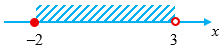</figure></div><div class="result-question-answer">Verilmiş Cavab:<p><math xmlns="http://www.w3.org/1998/Math/MathML"><mfenced close="" open="{"><mtable columnalign="left"><mtr><mtd><mi>x</mi><mo>≥</mo><mo>-</mo><mn>2</mn></mtd></mtr><mtr><mtd><mi>x</mi><mo><</mo><mn>3</mn></mtd></mtr></mtable></mfenced></math></p></div><div class="result-question-right">Doğru cavab:<p><math xmlns="http://www.w3.org/1998/Math/MathML"><mfenced close="" open="{"><mtable columnalign="left"><mtr><mtd><mi>x</mi><mo>≥</mo><mo>-</mo><mn>2</mn></mtd></mtr><mtr><mtd><mi>x</mi><mo><</mo><mn>3</mn></mtd></mtr></mtable></mfenced></math></p></div></li><li id="q356114" class="result-question wrong"><div class="result-question-body"><p>Aşağıdakı ədədlərdən hansının�<math xmlns="http://www.w3.org/1998/Math/MathML"><msqrt><mn>12</mn></msqrt></math>�ədədi ilə hasili rasional ədəd <strong>deyil</strong>?</p></div><div class="result-question-answer">Verilmiş Cavab:<p><math xmlns="http://www.w3.org/1998/Math/MathML"><msqrt><mfrac><mn>25</mn><mn>3</mn></mfrac></msqrt></math></p></div><div class="result-question-right">Doğru cavab:<p><math xmlns="http://www.w3.org/1998/Math/MathML"><msqrt><mfrac><mn>2</mn><mn>3</mn></mfrac></msqrt></math></p></div></li><li id="q356124" class="result-question right"><div class="result-question-body"><p><math xmlns="http://www.w3.org/1998/Math/MathML"><mi>a</mi></math>�ədədini�<math xmlns="http://www.w3.org/1998/Math/MathML"><mn>11</mn></math>-ə böldükdə qalıqda�<math xmlns="http://www.w3.org/1998/Math/MathML"><mn>2</mn></math>�alınır.�<math xmlns="http://www.w3.org/1998/Math/MathML"><msup><mi>a</mi><mn>3</mn></msup><mo>+</mo><mn>3</mn><mi>a</mi><mo>+</mo><mn>4</mn></math>�ədədinin�<math xmlns="http://www.w3.org/1998/Math/MathML"><mn>11</mn></math>-ə bölünməsindən alınan qalığı tapın.</p></div><div class="result-question-answer">Verilmiş Cavab:<p>7</p></div><div class="result-question-right">Doğru cavab:<p>7</p></div></li><li id="q356095" class="result-question wrong"><div class="result-question-body"><p><math xmlns="http://www.w3.org/1998/Math/MathML"><mi>a</mi></math>�parametrinin hansı qiymətində�<math xmlns="http://www.w3.org/1998/Math/MathML"><mo>(</mo><mi>k</mi><mo>+</mo><mn>1</mn><mo>;</mo><mo>�</mo><mi>k</mi><mo>-</mo><mn>1</mn><mo>)</mo></math>�cütü�<math xmlns="http://www.w3.org/1998/Math/MathML"><mfenced close="" open="{"><mtable columnalign="left"><mtr><mtd><mn>3</mn><mi>x</mi><mo>-</mo><mn>4</mn><mi>y</mi><mo>=</mo><mn>6</mn></mtd></mtr><mtr><mtd><mi>a</mi><mi>x</mi><mo>+</mo><mi>y</mi><mo>=</mo><mn>8</mn></mtd></mtr></mtable></mfenced></math>�tənliklər sisteminin həlli olar?</p></div><div class="result-question-answer">Verilmiş Cavab:<p><math xmlns="http://www.w3.org/1998/Math/MathML"><mn>2</mn></math></p></div><div class="result-question-right">Doğru cavab:<p><math xmlns="http://www.w3.org/1998/Math/MathML"><mn>4</mn></math></p></div></li><li id="q356091" class="result-question wrong"><div class="result-question-body"><p><math xmlns="http://www.w3.org/1998/Math/MathML"><mi>a</mi><mo>,</mo><mo>�</mo><mi>b</mi></math>�və�<math xmlns="http://www.w3.org/1998/Math/MathML"><mi>c</mi></math>�natural ədədləri cüt-cüt qarşılıqlı sadə ədədlər�olarsa,�<math xmlns="http://www.w3.org/1998/Math/MathML"><mi>Ə</mi><mi>B</mi><mi>O</mi><mi>B</mi><mo>(</mo><mi>a</mi><mo>;</mo><mo>�</mo><mi>b</mi><mo>)</mo><mo>+</mo><mi>Ə</mi><mi>K</mi><mi>O</mi><mi>B</mi><mo>(</mo><mi>b</mi><mo>;</mo><mo>�</mo><mi>c</mi><mo>)</mo></math>�ifadəsini sadələşdirin.</p></div><div class="result-question-answer">Verilmiş Cavab:<p><math xmlns="http://www.w3.org/1998/Math/MathML"><mi>a</mi><mi>b</mi><mo>+</mo><mn>1</mn></math></p></div><div class="result-question-right">Doğru cavab:<p><math xmlns="http://www.w3.org/1998/Math/MathML"><mi>b</mi><mi>c</mi><mo>+</mo><mn>1</mn></math></p></div></li><li id="q356120" class="result-question wrong"><div class="result-question-body"><p><math xmlns="http://www.w3.org/1998/Math/MathML"><mi>x</mi><mo>,</mo><mo>�</mo><mi>y</mi></math>�və�<math xmlns="http://www.w3.org/1998/Math/MathML"><mi>z</mi></math>�həqiqi ədədləri üçün�<math xmlns="http://www.w3.org/1998/Math/MathML"><mi>x</mi><mo>-</mo><mi>y</mi><mo>=</mo><mo>-</mo><mn>5</mn></math>�və�<math xmlns="http://www.w3.org/1998/Math/MathML"><mi>y</mi><mo>-</mo><mi>z</mi><mo>=</mo><mn>3</mn></math>�olarsa,�<math xmlns="http://www.w3.org/1998/Math/MathML"><mfenced close="|" open="|"><mrow><mi>z</mi><mo>-</mo><mi>x</mi></mrow></mfenced><mo>-</mo><mfrac><mrow><mi>z</mi><mo>-</mo><mi>y</mi></mrow><mfenced close="|" open="|"><mrow><mi>x</mi><mo>-</mo><mi>y</mi></mrow></mfenced></mfrac></math>�ifadəsinin qiymətini tapın.</p><p><br data-cke-filler="true"></p></div><div class="result-question-answer">Verilmiş Cavab:<p><math xmlns="http://www.w3.org/1998/Math/MathML"><mo>-</mo><mn>1</mn><mo>,</mo><mn>4</mn></math></p></div><div class="result-question-right">Doğru cavab:<p><math xmlns="http://www.w3.org/1998/Math/MathML"><mn>2</mn><mo>,</mo><mn>6</mn></math></p></div></li><li id="q356107" class="result-question right"><div class="result-question-body"><p><math xmlns="http://www.w3.org/1998/Math/MathML"><msup><mi>a</mi><mi>m</mi></msup><mo>–</mo><mn>36</mn></math>�çoxhədlisinin vuruqları�<math xmlns="http://www.w3.org/1998/Math/MathML"><mfenced><mrow><mi>a</mi><mo>–</mo><mn>6</mn></mrow></mfenced></math>�və�<math xmlns="http://www.w3.org/1998/Math/MathML"><mfenced><mrow><mi>a</mi><mo>+</mo><mi>b</mi></mrow></mfenced></math>�olarsa,�<math xmlns="http://www.w3.org/1998/Math/MathML"><mi>b</mi></math>�və�<math xmlns="http://www.w3.org/1998/Math/MathML"><mi>m</mi></math>�ədədlərinin hasilini tapın.</p></div><div class="result-question-answer">Verilmiş Cavab:<p>12</p></div><div class="result-question-right">Doğru cavab:<p>12</p></div></li><li id="q356117" class="result-question wrong"><div class="result-question-body"><p><math xmlns="http://www.w3.org/1998/Math/MathML"><mi>a</mi></math>�və�<math xmlns="http://www.w3.org/1998/Math/MathML"><mi>b</mi></math>�tərs mütənasib kəmiyyətlər olarsa,�<math xmlns="http://www.w3.org/1998/Math/MathML"><mi>x</mi><mo>-</mo><mi>y</mi></math>�fərqini tapın.</p><figure class="image">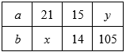</figure></div><div class="result-question-answer">Verilmiş Cavab:<p>16</p></div><div class="result-question-right">Doğru cavab:<p>8</p></div></li><li id="q356127" class="result-question wrong"><div class="result-question-body"><p><math xmlns="http://www.w3.org/1998/Math/MathML"><mfrac><mrow><mn>5</mn><mo>+</mo><mn>2</mn><msqrt><mn>6</mn></msqrt></mrow><mrow><msqrt><mn>3</mn></msqrt><mo>+</mo><msqrt><mn>2</mn></msqrt></mrow></mfrac><mo>+</mo><msqrt><mn>3</mn></msqrt><mo>-</mo><msqrt><mn>2</mn></msqrt></math>�ifadəsini sadələşdirin.</p></div><div class="result-question-answer">Verilmiş Cavab:<p><math xmlns="http://www.w3.org/1998/Math/MathML"><msqrt><mn>3</mn></msqrt><mo>+</mo><msqrt><mn>2</mn></msqrt></math></p></div><div class="result-question-right">Doğru cavab:<p><math xmlns="http://www.w3.org/1998/Math/MathML"><mn>2</mn><msqrt><mn>3</mn></msqrt></math></p></div></li><li id="q356111" class="result-question wrong"><div class="result-question-body"><p><math xmlns="http://www.w3.org/1998/Math/MathML"><mn>30</mn></math>-dan kiçik sadə ədədlər çoxluğu�<math xmlns="http://www.w3.org/1998/Math/MathML"><mi>A</mi></math>�ilə,�<math xmlns="http://www.w3.org/1998/Math/MathML"><mn>5</mn></math>-ə bölünən ikirəqəmli ədədlər çoxluğu isə�<math xmlns="http://www.w3.org/1998/Math/MathML"><mi>B</mi></math>�ilə işarə edilmişdir.�<math xmlns="http://www.w3.org/1998/Math/MathML"><mi>n</mi><mfenced><mrow><mi>A</mi><mo>∩</mo><mi>B</mi></mrow></mfenced></math>-ni�tapın.</p></div><div class="result-question-answer">Verilmiş Cavab:<p>5</p></div><div class="result-question-right">Doğru cavab:<p>0</p></div></li><li id="q356134" class="result-question wrong"><div class="result-question-body"><p>Eyler-Venn diaqramında�<math xmlns="http://www.w3.org/1998/Math/MathML"><mi>A</mi></math>�və�<math xmlns="http://www.w3.org/1998/Math/MathML"><mi>B</mi></math>�çoxluqlarının elementlərinin sayı verilmişdir.�<math xmlns="http://www.w3.org/1998/Math/MathML"><mn>3</mn><mo>·</mo><mi>n</mi><mo>(</mo><mi>B</mi><mo>)</mo><mo>=</mo><mn>5</mn><mo>·</mo><mi>n</mi><mo>(</mo><mi>A</mi><mo>\</mo><mi>B</mi><mo>)</mo></math>�olarsa,�<math xmlns="http://www.w3.org/1998/Math/MathML"><mi>n</mi><mfenced><mi>A</mi></mfenced></math>-nı tapın.</p><figure class="image">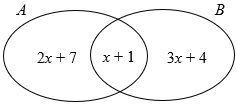</figure></div><div class="result-question-answer">Verilmiş Cavab: 4</div><div class="result-question-right">Doğru cavab: 38</div></li><li id="q356137" class="result-question empty"><div class="result-question-body"><p>Katerin axına qarşı olan sürəti çayın sürətindən 7 dəfə çox olarsa, axınla olan sürəti çayın sürətindən neçə dəfə çox olar?</p></div><div class="result-question-answer">Verilmiş Cavab: Boş</div><div class="result-question-right">Doğru cavab: 9</div></li><li id="q356132" class="result-question empty"><div class="result-question-body"><p>Uyğun tərəfləri perpendikulyar olan bucaqlardan biri digərindən üç dəfə kiçikdir. Böyük bucağın dərəcə ölçüsünü tapın.</p></div><div class="result-question-answer">Verilmiş Cavab: Boş</div><div class="result-question-right">Doğru cavab: 135</div></li><li id="q356140" class="result-question wrong"><div class="result-question-body"><p>Katetləri�<math xmlns="http://www.w3.org/1998/Math/MathML"><mi>x</mi></math>�və�<math xmlns="http://www.w3.org/1998/Math/MathML"><mo>(</mo><mi>x</mi><mo>+</mo><mn>2</mn><mo>)</mo></math>, hipotenuzu isə�<math xmlns="http://www.w3.org/1998/Math/MathML"><mo>(</mo><mi>x</mi><mo>+</mo><mn>4</mn><mo>)</mo></math>�olan düzbucaqlı üçbucağın tərəfləri üzərində bərabərtərəfli üçbucaqlar qurulmuşdur. Bərabərtərəfli üçbucaqların perimetrləri cəmini tapın.</p><figure class="image">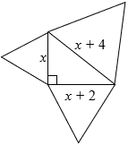</figure></div><div class="result-question-answer">Verilmiş Cavab: 48</div><div class="result-question-right">Doğru cavab: 72</div></li><li id="q356143" class="result-question wrong"><div class="result-question-body"><p>Tərəfi�<math xmlns="http://www.w3.org/1998/Math/MathML"><mi>a</mi></math>�olan düzgün çoxbucaqlılar üçün uyğunluğu müəyyən edin.</p><p>1. düzgün beşbucaqlı<br>2. bərabərtərəfli üçbucaq<br>3. kvadrat</p><p>a.�<math xmlns="http://www.w3.org/1998/Math/MathML"><mi>S</mi><mo>=</mo><mfrac><mn>1</mn><mn>2</mn></mfrac><msup><mi>a</mi><mn>2</mn></msup></math><br>b.�<math xmlns="http://www.w3.org/1998/Math/MathML"><mi>S</mi><mo>=</mo><mfrac><msqrt><mn>3</mn></msqrt><mn>4</mn></mfrac><msup><mi>a</mi><mn>2</mn></msup></math><br>c.�<math xmlns="http://www.w3.org/1998/Math/MathML"><mi>P</mi><mo>=</mo><mn>4</mn><mi>a</mi></math><br>d.�<math xmlns="http://www.w3.org/1998/Math/MathML"><mi>P</mi><mo>=</mo><mn>3</mn><mi>a</mi></math><br>e.�<math xmlns="http://www.w3.org/1998/Math/MathML"><mi>P</mi><mo>=</mo><mn>5</mn><mi>a</mi></math></p></div><div class="result-question-answer">Verilmiş Cavab: 1be2ad3c</div><div class="result-question-right">Doğru cavab: 1e2bd3c</div></li><li id="q356152" class="result-question parent"><div class="result-question-body"></div></li><li id="q356153" class="result-question empty"><div class="result-question-body"><p><math xmlns="http://www.w3.org/1998/Math/MathML"><mi>A</mi><mi>B</mi><mi>C</mi><mi>D</mi></math>�düzbucaqlısında�<math xmlns="http://www.w3.org/1998/Math/MathML"><mi>C</mi><mi>E</mi><mo>⊥</mo><mi>B</mi><mi>D</mi></math>,�<math xmlns="http://www.w3.org/1998/Math/MathML"><mi>B</mi><mi>E</mi><mo>=</mo><mn>12</mn></math>�və�<math xmlns="http://www.w3.org/1998/Math/MathML"><mi>E</mi><mi>D</mi><mo>=</mo><mn>3</mn></math>�olarsa,�düzbucaqlının sahəsini tapın.</p><figure class="image">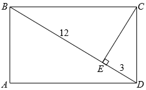</figure></div><div class="result-question-answer">Verilmiş Cavab:<br>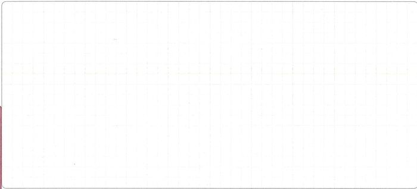<br></div><div class="result-question-explanation"><p>Cavab:�<math xmlns="http://www.w3.org/1998/Math/MathML"><mn>90</mn></math></p><p>Həlli:</p><p><i>I üsul:</i><br><math xmlns="http://www.w3.org/1998/Math/MathML"><mi>B</mi><mi>C</mi><mi>D</mi></math>�düzbucaqlı üçbucağında�<math xmlns="http://www.w3.org/1998/Math/MathML"><mi>C</mi><mi>E</mi></math>�hipetonuza endirilmiş hündürlük olduğundan,�<math xmlns="http://www.w3.org/1998/Math/MathML"><mi>C</mi><mi>E</mi><mo>=</mo><msqrt><mi>B</mi><mi>E</mi><mo>·</mo><mi>E</mi><mi>D</mi></msqrt><mo>=</mo><msqrt><mn>12</mn><mo>·</mo><mn>3</mn></msqrt><mo>=</mo><mn>6</mn></math>�olar.<br><math xmlns="http://www.w3.org/1998/Math/MathML"><mi>B</mi><mi>D</mi><mo>=</mo><mn>12</mn><mo>+</mo><mn>3</mn><mo>=</mo><mn>15</mn></math>�olduğundan,��alarıq.�<math xmlns="http://www.w3.org/1998/Math/MathML"><msub><mi>S</mi><mrow><mi>B</mi><mi>C</mi><mi>D</mi></mrow></msub><mo>=</mo><mfrac><mn>1</mn><mn>2</mn></mfrac><mo>·</mo><mn>15</mn><mo>·</mo><mn>6</mn><mo>=</mo><mn>45</mn><mo>,</mo></math><math xmlns="http://www.w3.org/1998/Math/MathML"><msub><mi>S</mi><mrow><mi>A</mi><mi>B</mi><mi>C</mi><mi>D</mi></mrow></msub><mo>=</mo><mn>2</mn><mo>·</mo><msub><mi>S</mi><mrow><mi>B</mi><mi>C</mi><mi>D</mi></mrow></msub><mo>=</mo><mn>2</mn><mo>·</mo><mn>45</mn><mo>=</mo><mn>90</mn></math><br><strong>Qeyd:</strong><i><strong> </strong>Həllin davamı��</i><math xmlns="http://www.w3.org/1998/Math/MathML"><msub><mi>S</mi><mrow><mi>A</mi><mi>B</mi><mi>C</mi><mi>D</mi></mrow></msub><mo>=</mo><mi>B</mi><mi>D</mi><mo>·</mo><mi>E</mi><mi>C</mi><mo>=</mo><mn>15</mn><mo>·</mo><mn>6</mn><mo>=</mo><mn>90</mn></math><i>�şəklində yazıla bilər.</i></p><p><i>II üsul:�</i><br><math xmlns="http://www.w3.org/1998/Math/MathML"><mi>B</mi><mi>C</mi><mi>D</mi></math>�düzbucaqlı üçbucağında�<math xmlns="http://www.w3.org/1998/Math/MathML"><mi>C</mi><mi>E</mi></math>�hipetonuza endirilmiş hündürlük olduğundan,�<math xmlns="http://www.w3.org/1998/Math/MathML"><mi>C</mi><mi>E</mi><mo>=</mo><msqrt><mi>B</mi><mi>E</mi><mo>·</mo><mi>E</mi><mi>D</mi></msqrt><mo>=</mo><msqrt><mn>12</mn><mo>·</mo><mn>3</mn></msqrt><mo>=</mo><mn>6</mn></math>�olar.</p><p>Pifaqor teoreminə görə�<br><math xmlns="http://www.w3.org/1998/Math/MathML"><mi>C</mi><msup><mi>D</mi><mn>2</mn></msup><mo>=</mo><mi>E</mi><msup><mi>D</mi><mn>2</mn></msup><mo>+</mo><mi>E</mi><msup><mi>C</mi><mn>2</mn></msup><mo>=</mo><msup><mn>3</mn><mn>2</mn></msup><mo>+</mo><msup><mn>6</mn><mn>2</mn></msup><mo>=</mo><mn>45</mn></math><math xmlns="http://www.w3.org/1998/Math/MathML"><mo>⇒</mo><mi>C</mi><mi>D</mi><mo>=</mo><msqrt><mn>45</mn></msqrt><mo>=</mo><mn>3</mn><msqrt><mn>5</mn></msqrt></math><br><math xmlns="http://www.w3.org/1998/Math/MathML"><mi>B</mi><msup><mi>C</mi><mn>2</mn></msup><mo>=</mo><mi>B</mi><msup><mi>E</mi><mn>2</mn></msup><mo>+</mo><mi>E</mi><msup><mi>C</mi><mn>2</mn></msup><mo>=</mo><msup><mn>12</mn><mn>2</mn></msup><mo>+</mo><msup><mn>6</mn><mn>2</mn></msup><mo>=</mo><mn>180</mn></math><math xmlns="http://www.w3.org/1998/Math/MathML"><mo>⇒</mo><mi>B</mi><mi>C</mi><mo>=</mo><msqrt><mn>180</mn></msqrt><mo>=</mo><mn>6</mn><msqrt><mn>5</mn></msqrt></math><br><math xmlns="http://www.w3.org/1998/Math/MathML"><msub><mi>S</mi><mrow><mi>A</mi><mi>B</mi><mi>C</mi><mi>D</mi></mrow></msub><mo>=</mo><mi>B</mi><mi>C</mi><mo>·</mo><mi>C</mi><mi>D</mi><mo>=</mo><mn>3</mn><msqrt><mn>5</mn></msqrt><mo>·</mo><mn>6</mn><msqrt><mn>5</mn></msqrt><mo>=</mo><mn>90</mn></math></p><p><i>III üsul:��</i><br><math xmlns="http://www.w3.org/1998/Math/MathML"><mi>B</mi><mi>C</mi><mi>D</mi></math>�düzbucaqlı üçbucağında katetlərinin hipotenuz üzərindəki proyeksiyalarına əsasən</p><p><math xmlns="http://www.w3.org/1998/Math/MathML"><mi>B</mi><msup><mi>C</mi><mn>2</mn></msup><mo>=</mo><mi>B</mi><mi>E</mi><mo>·</mo><mi>B</mi><mi>D</mi><mo>=</mo><mn>12</mn><mo>·</mo><mn>15</mn><mo>=</mo><mn>180</mn></math><math xmlns="http://www.w3.org/1998/Math/MathML"><mo>⇒</mo><mi>B</mi><mi>C</mi><mo>=</mo><msqrt><mn>180</mn></msqrt><mo>=</mo><mn>6</mn><msqrt><mn>5</mn></msqrt></math><br><math xmlns="http://www.w3.org/1998/Math/MathML"><mi>C</mi><msup><mi>D</mi><mn>2</mn></msup><mo>=</mo><mi>E</mi><mi>D</mi><mo>·</mo><mi>B</mi><mi>D</mi><mo>=</mo><mn>3</mn><mo>·</mo><mn>15</mn><mo>=</mo><mn>45</mn></math><math xmlns="http://www.w3.org/1998/Math/MathML"><mo>⇒</mo><mi>C</mi><mi>D</mi><mo>=</mo><msqrt><mn>45</mn></msqrt><mo>=</mo><mn>3</mn><msqrt><mn>5</mn></msqrt></math><br><math xmlns="http://www.w3.org/1998/Math/MathML"><msub><mi>S</mi><mrow><mi>A</mi><mi>B</mi><mi>C</mi><mi>D</mi></mrow></msub><mo>=</mo><mi>B</mi><mi>C</mi><mo>·</mo><mi>C</mi><mi>D</mi><mo>=</mo><mn>3</mn><msqrt><mn>5</mn></msqrt><mo>·</mo><mn>6</mn><msqrt><mn>5</mn></msqrt><mo>=</mo><mn>90</mn></math></p><p>Meyar:</p><figure class="table"><table><tbody><tr><td>1 bal</td><td>a. Həll üsulu yazılmaqla tapşırığın doğru cavabı tapılıb.</td></tr><tr><td>2/3 bal</td><td>b.�I üsulla həll zamanı�<math xmlns="http://www.w3.org/1998/Math/MathML"><mi>C</mi><mi>E</mi></math>�hündürlüyü və�<math xmlns="http://www.w3.org/1998/Math/MathML"><mi>B</mi><mi>C</mi><mi>D</mi></math>�üçbucağının sahəsi hesablanıb, lakin düzbucaqlının sahəsi <i><strong>tapılmayıb</strong></i> və ya <i><strong>səhv</strong></i> tapılıb;�<br>c. II və III üsulla həll zamanı düzbucaqlının tərəflərindən yalnız biri və buna uyğun olaraq düzbucaqlının sahəsi doğru tapılıb;�<br>d. II və III üsulla həll zamanı düzbucaqlının hər iki tərəfi doğru tapılıb, lakin düzbucaqlının sahəsi <i><strong>tapılmayıb</strong></i> və ya <i><strong>səhv</strong></i> tapılıb;�<br>e.�I üsulla həll zamanı�<math xmlns="http://www.w3.org/1998/Math/MathML"><mi>C</mi><mi>E</mi></math>�hündürlüyünün uzunluğu hesablama <i><strong>aparılmadan</strong></i> birbaşa qeyd edilib və buna uyğun olaraq həll prosesi sona qədər doğru yazılıb;<br>f.�I üsulla həll zamanı�<math xmlns="http://www.w3.org/1998/Math/MathML"><mi>C</mi><mi>E</mi></math>�hündürlüyünün uzunluğu�hesablama aparılaraq yazılıb,�<math xmlns="http://www.w3.org/1998/Math/MathML"><mi>B</mi><mi>C</mi><mi>D</mi></math>�üçbucağının sahəsi birbaşa qeyd edilib və düzbucaqlının sahəsi doğru tapılıb;</td></tr><tr><td>1/3 bal</td><td>g. Yalnız�<math xmlns="http://www.w3.org/1998/Math/MathML"><mi>C</mi><mi>E</mi></math>�hündürlüyü�hesablama aparılaraq yazılıb,�lakin həllin davamı <i><strong>yoxdur</strong></i> və ya tamamılə <i><strong>səhvdir</strong></i>;<br>h.�<math xmlns="http://www.w3.org/1998/Math/MathML"><mi>C</mi><mi>E</mi></math>�hündürlüyünün uzunluğu hesablama <i><strong>aparılmadan</strong></i> birbaşa yazılıb və�<math xmlns="http://www.w3.org/1998/Math/MathML"><mi>B</mi><mi>C</mi><mi>D</mi></math>�üçbucağının sahəsi isə həll prosesi yazılaraq qeyd edilib, lakin düzbucaqlının sahəsi <i><strong>tapılmayıb</strong></i> və ya <i><strong>səhv</strong></i> tapılıb;<br>i. II və III üsulla həll zamanı düzbucaqlının hər iki tərəfinın tapılmasında hesablama <strong>səhvinə </strong>yol verilib (düstur doğru yazılsa da!), lakin alınan qiymətlərə görə düzbucaqlının sahəsi doğru tapılıb;�<br>j. Tapşırığın həll prosesi doğru yazılıb, amma yol verilən <i><strong>iki </strong></i>mexaniki <i><strong>səhvə</strong></i> görə (hesablama <i><strong>səhvi</strong></i> nəzərdə tutulur) cavab <i><strong>səhv</strong></i> tapılıb;<br>k.�I üsulla həll zamanı�<math xmlns="http://www.w3.org/1998/Math/MathML"><mi>C</mi><mi>E</mi></math>�hündürlüyü�və�<math xmlns="http://www.w3.org/1998/Math/MathML"><mi>B</mi><mi>C</mi><mi>D</mi></math>�üçbucağının sahəsi birbaşa qeyd edilib və düzbucaqlının sahəsi doğru tapılıb;</td></tr><tr><td>0 bal</td><td>l. II və III üsulla həll zamanı düzbucaqlının tərəflərindən yalnız biri doğru tapılıb,�lakin həllin davamı <i><strong>yoxdur</strong></i> və ya tamamılə <i><strong>səhvdir</strong></i>;<br>m.�<math xmlns="http://www.w3.org/1998/Math/MathML"><mi>C</mi><mi>E</mi></math>�hündürlüyünün uzunluğu�hesablama <i><strong>aparılmadan</strong></i> yazılıb, həllin davamı <i><strong>yoxdur</strong></i> və ya tamamılə <i><strong>səhvdir</strong></i>;<br>n. a-k bəndlərində sadalanan hallardan başqa digər bütün hallar (eyni zamanda�cavablar hesablanma aparılmadan qeyd olunub).</td></tr></tbody></table></figure></div><div class="result-question-answer">Qiymətləndirmə: 0</div></li><li id="q356146" class="result-question parent"><div class="result-question-body"></div></li><li id="q356155" class="result-question empty"><div class="result-question-body"><p>Buğda əkilən sahə bütün tarlanın�<math xmlns="http://www.w3.org/1998/Math/MathML"><mn>45</mn><mo>%</mo></math>-ni, arpa əkilən sahə isə buğda əkilən sahənin�<math xmlns="http://www.w3.org/1998/Math/MathML"><mfrac><mn>4</mn><mn>9</mn></mfrac></math>�hissəsini təşkil edir. Tarlanın qalan hissəsinə qarğıdalı əkilmişdir. Qarğıdalı əkilən sahə arpa əkilən sahənin neçə faizini təşkil edir?</p></div><div class="result-question-answer">Verilmiş Cavab:<br>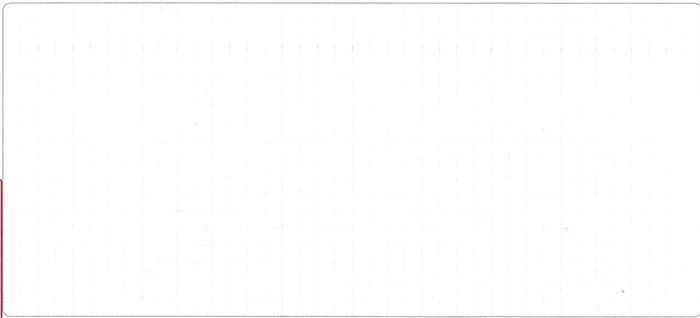<br></div><div class="result-question-explanation"><p>Cavab:�<math xmlns="http://www.w3.org/1998/Math/MathML"><mn>175</mn><mo>%</mo></math></p><p>Həlli:</p><p><i><strong>I üsul:</strong></i></p><p>Tarlanın sahəsini�<math xmlns="http://www.w3.org/1998/Math/MathML"><mi>S</mi></math>�ilə işarə edək.<br>Onda, buğda əkilən sahə�<math xmlns="http://www.w3.org/1998/Math/MathML"><mn>0</mn><mo>,</mo><mn>45</mn><mo>·</mo><mi>S</mi></math>, arpa əkilən sahə�<math xmlns="http://www.w3.org/1998/Math/MathML"><mn>0</mn><mo>,</mo><mn>45</mn><mo>·</mo><mi>S</mi><mo>·</mo><mfrac><mn>4</mn><mn>9</mn></mfrac><mo>=</mo><mn>0</mn><mo>,</mo><mn>2</mn><mo>·</mo><mi>S</mi></math>, qarğıdalı əkilən sahə isə�<math xmlns="http://www.w3.org/1998/Math/MathML"><mi>S</mi><mo>-</mo><mn>0</mn><mo>,</mo><mn>45</mn><mo>·</mo><mi>S</mi><mo>-</mo><mn>0</mn><mo>,</mo><mn>2</mn><mo>·</mo><mi>S</mi><mo>=</mo><mn>0</mn><mo>,</mo><mn>35</mn><mo>·</mo><mi>S</mi></math>�olar.<br>Qarğıdalı əkilən sahənin arpa əkilən sahəyə faiz nisbəti tələb olunduğundan,�<math xmlns="http://www.w3.org/1998/Math/MathML"><mfrac><mrow><mn>0</mn><mo>,</mo><mn>35</mn><mo>·</mo><mi>S</mi></mrow><mrow><mn>0</mn><mo>,</mo><mn>2</mn><mo>·</mo><mi>S</mi></mrow></mfrac><mo>·</mo><mn>100</mn><mo>=</mo><mn>175</mn><mo>%</mo></math>�alarıq.<br><i><strong>Qeyd:</strong> Həllin davamı�</i><math xmlns="http://www.w3.org/1998/Math/MathML"><mtable><mtr><mtd><mn>0</mn><mo>,</mo><mn>2</mn><mo>·</mo><mi>S</mi></mtd><mtd><mo>-</mo></mtd><mtd><mn>100</mn><mo>%</mo></mtd></mtr><mtr><mtd><mn>0</mn><mo>,</mo><mn>35</mn><mo>·</mo><mi>S</mi></mtd><mtd><mo>-</mo></mtd><mtd><mi>x</mi><mo>%</mo></mtd></mtr></mtable></math><i>�tənasübü vasitəsilə yazıla bilər.</i></p><p><i><strong>II üsul:</strong></i></p><p>Tarlanın sahəsi�<math xmlns="http://www.w3.org/1998/Math/MathML"><mn>100</mn><mo>�</mo><mi>h</mi><mi>a</mi></math>�olsun.<br>Onda, buğda əkilən sahə�<math xmlns="http://www.w3.org/1998/Math/MathML"><mn>0</mn><mo>,</mo><mn>45</mn><mo>·</mo><mn>100</mn><mo>=</mo><mn>45</mn><mo>�</mo><mi>h</mi><mi>a</mi></math>, arpa əkilən sahə�<math xmlns="http://www.w3.org/1998/Math/MathML"><mn>45</mn><mo>·</mo><mfrac><mn>4</mn><mn>9</mn></mfrac><mo>=</mo><mn>20</mn><mo>�</mo><mi>h</mi><mi>a</mi></math>, qarğıdalı əkilən sahə isə�<math xmlns="http://www.w3.org/1998/Math/MathML"><mn>100</mn><mo>-</mo><mn>45</mn><mo>-</mo><mn>20</mn><mo>=</mo><mn>35</mn><mo>�</mo><mi>h</mi><mi>a</mi></math>�olar.<br>Qarğıdalı əkilən sahənin arpa əkilən sahəyə faiz nisbəti tələb olunduğundan,�<math xmlns="http://www.w3.org/1998/Math/MathML"><mfrac><mn>35</mn><mn>20</mn></mfrac><mo>·</mo><mn>100</mn><mo>=</mo><mn>175</mn><mo>%</mo></math>�alarıq.<br><i><strong>Qeyd:</strong> Həllin davamı�</i><math xmlns="http://www.w3.org/1998/Math/MathML"><mtable><mtr><mtd><mn>20</mn></mtd><mtd><mo>-</mo></mtd><mtd><mn>100</mn><mo>%</mo></mtd></mtr><mtr><mtd><mn>35</mn></mtd><mtd><mo>-</mo></mtd><mtd><mi>x</mi><mo>%</mo></mtd></mtr></mtable></math><i>�tənasübü vasitəsilə yazıla bilər.</i></p><p><i><strong>III üsul:</strong></i></p><p>Buğda əkilən sahə:�<math xmlns="http://www.w3.org/1998/Math/MathML"><mn>45</mn><mo>%</mo></math><br>Arpa əkilən sahə:�<math xmlns="http://www.w3.org/1998/Math/MathML"><mn>45</mn><mo>·</mo><mfrac><mn>4</mn><mn>9</mn></mfrac><mo>=</mo><mn>20</mn><mo>%</mo></math><br>Qarğıdalı əkilən sahə:�<math xmlns="http://www.w3.org/1998/Math/MathML"><mn>100</mn><mo>-</mo><mn>45</mn><mo>-</mo><mn>20</mn><mo>=</mo><mn>35</mn><mo>%</mo></math>�olar.<br>Qarğıdalı əkilən sahənin arpa əkilən sahəyə faiz nisbəti tələb olunduğundan,�<math xmlns="http://www.w3.org/1998/Math/MathML"><mfrac><mn>35</mn><mn>20</mn></mfrac><mo>·</mo><mn>100</mn><mo>=</mo><mn>175</mn><mo>%</mo></math>�alarıq.<br><i><strong>Qeyd:</strong> Həllin davamı�</i><math xmlns="http://www.w3.org/1998/Math/MathML"><mtable><mtr><mtd><mn>20</mn></mtd><mtd><mo>-</mo></mtd><mtd><mn>100</mn><mo>%</mo></mtd></mtr><mtr><mtd><mn>35</mn></mtd><mtd><mo>-</mo></mtd><mtd><mi>x</mi><mo>%</mo></mtd></mtr></mtable></math><i>�tənasübü vasitəsilə yazıla bilər.</i></p><p><i><strong>IV üsul:</strong></i></p><p>Buğda əkilən sahə:�<math xmlns="http://www.w3.org/1998/Math/MathML"><mn>45</mn><mo>%</mo><mo>=</mo><mfrac><mn>45</mn><mn>100</mn></mfrac><mo>=</mo><mfrac><mn>9</mn><mn>20</mn></mfrac></math>�hissə<br>Arpa əkilən sahə:�<math xmlns="http://www.w3.org/1998/Math/MathML"><mfrac><mn>9</mn><mn>20</mn></mfrac><mo>·</mo><mfrac><mn>4</mn><mn>9</mn></mfrac><mo>=</mo><mfrac><mn>1</mn><mn>5</mn></mfrac></math>�hissə<br>Qarğıdalı əkilən sahə:�<math xmlns="http://www.w3.org/1998/Math/MathML"><mn>1</mn><mo>-</mo><mfrac><mn>9</mn><mn>20</mn></mfrac><mo>-</mo><mfrac><mn>1</mn><mn>5</mn></mfrac><mo>=</mo><mfrac><mrow><mn>20</mn><mo>-</mo><mn>9</mn><mo>-</mo><mn>4</mn></mrow><mn>20</mn></mfrac><mo>=</mo><mfrac><mn>7</mn><mn>20</mn></mfrac></math>�hissə<br>Qarğıdalı əkilən sahənin arpa əkilən sahəyə faiz nisbəti tələb olunduğundan,�<math xmlns="http://www.w3.org/1998/Math/MathML"><mfrac><mstyle displaystyle="true"><mfrac><mn>7</mn><mn>20</mn></mfrac></mstyle><mstyle displaystyle="true"><mfrac><mn>1</mn><mn>5</mn></mfrac></mstyle></mfrac><mo>·</mo><mn>100</mn><mo>=</mo><mfrac><mn>7</mn><mn>4</mn></mfrac><mo>·</mo><mn>100</mn><mo>=</mo><mn>175</mn><mo>%</mo></math>�alarıq.</p><p>Meyar:</p><figure class="table"><table><tbody><tr><td>1 bal</td><td>a. Həll üsulu yazılmaqla tapşırığın doğru cavabı tapılıb;</td></tr><tr><td>2/3 bal</td><td>b. Həlli yazılmaqla arpa və qarğıdalı əkilən sahəyə uyğun hissə doğru tapılıb, lakin tələb olunan faiz <i><strong>tapılmayıb</strong></i> və ya <i><strong>səhv</strong></i> tapılıb;<br>c. Həlli yazılmaqla arpa və ya qarğıdalı əkilən sahələrdən birinə uyğun hissənin tapılmasında <i><strong>səhvə </strong></i>yol verilib, lakin alınan ədədlərə görə tələb olunan faiz doğru tapılıb;<br>d. Həlli yazılmaqla qarğıdalı əkilən sahənin buğda əkilən sahəyə görə neçə faiz təşkil etdiyi doğru tapılıb;<br>e. Həlli yazılmaqla arpa əkilən sahənin qarğıdalı əkilən sahəyə görə neçə faiz təşkil etdiyi doğru tapılıb;</td></tr><tr><td>1/3 bal</td><td>f. Həlli yazılmaqla arpa əkilən sahəyə uyğun hissə doğru tapılıb, lakin həllin davamı yoxdur və ya <i><strong>səhvdir</strong></i>;<br>g. Arpa və qarğıdalı əkilən sahələrin hər ikisinə uyğun hissələrin tapılmasında <i><strong>səhvə </strong></i>yol verilib, lakin alınan ədədlərə görə tələb olunan faiz doğru tapılıb;<br>h. Birbaşa qarğıdalı əkilən sahənin (burada qarğıdalı əkilən sahəyə uyğun hissənin tapılması prosesi qeyd edilməyib) ümumi sahəyə görə neçə faiz təşkil etdiyi doğru tapılıb;<br>i. Həlli yazılmaqla buğda əkilən sahənin qarğıdalı əkilən sahəyə görə neçə faiz təşkil etdiyi doğru tapılıb;<br>j. Həll təqdim olunmadan arpa və qarğıdalı əkilən sahələrə uyğun hissələr doğru yazılıb və tələb olunan faiz doğru hesablanıb;</td></tr><tr><td>0 bal</td><td>k. a-j bəndlərində sadalanan hallardan başqa digər bütün hallar (eyni zamanda cavablar hesablanma aparılmadan qeyd olunubsa)</td></tr></tbody></table></figure></div><div class="result-question-answer">Qiymətləndirmə: 0</div></li><li id="q356159" class="result-question wrong"><div class="result-question-body"><p>Mərkəzləri�<math xmlns="http://www.w3.org/1998/Math/MathML"><msub><mi>O</mi><mn>1</mn></msub></math>�və�<math xmlns="http://www.w3.org/1998/Math/MathML"><msub><mi>O</mi><mn>2</mn></msub></math>, radiusları�isə�<math xmlns="http://www.w3.org/1998/Math/MathML"><mi>R</mi></math>�və�<math xmlns="http://www.w3.org/1998/Math/MathML"><mi>r</mi></math>�olan iki çevrə bir-birinə xaricdən toxunur. İsbat edin ki, bu çevrələrin ortaq toxunanı olan�<math xmlns="http://www.w3.org/1998/Math/MathML"><mi>A</mi><mi>B</mi></math>�parçasının uzunluğu�<math xmlns="http://www.w3.org/1998/Math/MathML"><mi>A</mi><mi>B</mi></math>�uyğun olaraq�<math xmlns="http://www.w3.org/1998/Math/MathML"><mn>2</mn><msqrt><mi>R</mi><mo>·</mo><mi>r</mi></msqrt></math>�düsturu ilə hesablana bilər.</p><figure class="image">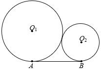</figure></div><div class="result-question-answer">Verilmiş Cavab:<br>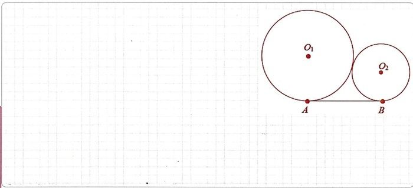<br></div><div class="result-question-explanation"><p>İsbatı:</p><p>Çevrələrin mərkəzlərini birləşdirək və�<math xmlns="http://www.w3.org/1998/Math/MathML"><mi>A</mi><mi>B</mi></math>�parçasına paralel olan�<math xmlns="http://www.w3.org/1998/Math/MathML"><msub><mi>O</mi><mn>2</mn></msub><mi>M</mi></math>�parçasını çəkək.</p><figure class="image">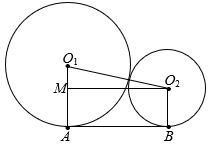</figure><p>Onda,�<math xmlns="http://www.w3.org/1998/Math/MathML"><msub><mi>O</mi><mn>1</mn></msub><msub><mi>O</mi><mn>2</mn></msub><mo>=</mo><mi>R</mi><mo>+</mo><mi>r</mi></math>,�<math xmlns="http://www.w3.org/1998/Math/MathML"><msub><mi>O</mi><mn>1</mn></msub><mi>M</mi><mo>=</mo><mi>R</mi><mo>-</mo><mi>r</mi></math>�və�<math xmlns="http://www.w3.org/1998/Math/MathML"><msub><mi>O</mi><mn>2</mn></msub><mi>M</mi><mo>=</mo><mi>A</mi><mi>B</mi></math>�olar.<br>Toxunma nöqtəsində radius toxunana perpendikulyar�(<math xmlns="http://www.w3.org/1998/Math/MathML"><msub><mi>O</mi><mn>1</mn></msub><mi>A</mi><mo>⊥</mo><mi>A</mi><mi>B</mi></math>) və�<math xmlns="http://www.w3.org/1998/Math/MathML"><mi>A</mi><mi>B</mi><mo>∥</mo><msub><mi>O</mi><mn>2</mn></msub><mi>M</mi></math>�olduğundan,�<math xmlns="http://www.w3.org/1998/Math/MathML"><msub><mi>O</mi><mn>1</mn></msub><mi>M</mi><mo>⊥</mo><msub><mi>O</mi><mn>2</mn></msub><mi>M</mi></math>�yaza bilərik.<br>Deməli,�<math xmlns="http://www.w3.org/1998/Math/MathML"><msub><mi>O</mi><mn>1</mn></msub><mi>M</mi><msub><mi>O</mi><mn>2</mn></msub></math>�düzbucaqlı üçbucaqdır.<br>Onda, Pifaqor teoreminə görə, yaza bilərik:<br><math xmlns="http://www.w3.org/1998/Math/MathML"><mi>A</mi><msup><mi>B</mi><mn>2</mn></msup><mo>=</mo><msup><mrow><mo>(</mo><mi>R</mi><mo>+</mo><mi>r</mi><mo>)</mo></mrow><mn>2</mn></msup><mo>-</mo><msup><mrow><mo>(</mo><mi>R</mi><mo>-</mo><mi>r</mi><mo>)</mo></mrow><mn>2</mn></msup><mo>�</mo><mo>⇒</mo><mo>�</mo></math><math xmlns="http://www.w3.org/1998/Math/MathML"><mi>A</mi><msup><mi>B</mi><mn>2</mn></msup><mo>=</mo><msup><mrow><msup><mi>R</mi><mn>2</mn></msup><mo>+</mo><mn>2</mn><mi>R</mi><mo>·</mo><mi>r</mi><mo>+</mo><mi>r</mi></mrow><mn>2</mn></msup><mo>-</mo><msup><mrow><msup><mi>R</mi><mn>2</mn></msup><mo>+</mo><mn>2</mn><mi>R</mi><mo>·</mo><mi>r</mi><mo>-</mo><mi>r</mi></mrow><mn>2</mn></msup><mo>�</mo><mo>⇒</mo><mo>�</mo></math><math xmlns="http://www.w3.org/1998/Math/MathML"><mi>A</mi><msup><mi>B</mi><mn>2</mn></msup><mo>=</mo><mn>4</mn><mi>R</mi><mo>·</mo><mi>r</mi><mo>�</mo><mo>⇒</mo><mo>�</mo><mi>A</mi><mi>B</mi><mo>=</mo><mn>2</mn><msqrt><mi>R</mi><mo>·</mo><mi>r</mi></msqrt></math></p><p>Meyar:�</p><figure class="table"><table><tbody><tr><td>1 bal</td><td>a. Üsulundan asılı olmayaraq isbat doğru yerinə yetirilib;</td></tr><tr><td>1/2 bal</td><td>b.�<math xmlns="http://www.w3.org/1998/Math/MathML"><msub><mi>O</mi><mn>1</mn></msub><mi>M</mi><msub><mi>O</mi><mn>2</mn></msub></math>�düzbucaqlı üçbucağının (<math xmlns="http://www.w3.org/1998/Math/MathML"><mi>M</mi></math>�nöqtəsi başqa hərflə də adlandırıla bilər)�<math xmlns="http://www.w3.org/1998/Math/MathML"><msub><mi>O</mi><mn>1</mn></msub><mi>M</mi><mo>=</mo><mi>R</mi><mo>-</mo><mi>r</mi></math>�kateti,�<math xmlns="http://www.w3.org/1998/Math/MathML"><msub><mi>O</mi><mn>1</mn></msub><msub><mi>O</mi><mn>2</mn></msub><mo>=</mo><mi>R</mi><mo>+</mo><mi>r</mi></math>�hipetonuzu �və �(<math xmlns="http://www.w3.org/1998/Math/MathML"><msub><mi>O</mi><mn>1</mn></msub><mi>A</mi><mo>⊥</mo><mi>A</mi><mi>B</mi></math>) və�<math xmlns="http://www.w3.org/1998/Math/MathML"><mi>A</mi><mi>B</mi><mo>∥</mo><msub><mi>O</mi><mn>2</mn></msub><mi>M</mi></math>�olduğundan,�<math xmlns="http://www.w3.org/1998/Math/MathML"><msub><mi>O</mi><mn>1</mn></msub><mi>M</mi><mo>⊥</mo><msub><mi>O</mi><mn>2</mn></msub><mi>M</mi></math>� yazılıb, lakin�isbat prosesi davam <i><strong>etdirilməyib</strong></i> və ya <i><strong>səhv</strong></i> davam etdirilib;�</td></tr><tr><td>0 bal</td><td>c. a-b bəndlərində sadalanan hallardan başqa digər bütün hallar.</td></tr></tbody></table></figure></div><div class="result-question-answer">Qiymətləndirmə: 0</div></li></ul></li><li class="result-subject"><h3 class="result-subject-name">Fizika (Maksimum: 150)</h3><div class="result-subject-stats"><div>Doğru cavabların sayı: <strong>19</strong></div><div>Yanlış cavabların sayı: <strong>11</strong></div><div>Nəticə: <strong>116.1</strong></div></div><ul class="result-questions"><li id="q356163" class="result-question right"><div class="result-question-body"><p>Nigar�<math xmlns="http://www.w3.org/1998/Math/MathML"><mn>1</mn></math>�dəqiqə ərzində�<math xmlns="http://www.w3.org/1998/Math/MathML"><mn>100</mn></math>�addım atır. Hər bir addımın uzunluğu�<math xmlns="http://www.w3.org/1998/Math/MathML"><mn>90</mn><mo>�</mo><mi>s</mi><mi>m</mi></math>�olarsa, onun sürəti nə qədərdir?</p></div><div class="result-question-answer">Verilmiş Cavab:<p><math xmlns="http://www.w3.org/1998/Math/MathML"><mn>1</mn><mo>,</mo><mn>5</mn><mfrac><mi>m</mi><mrow><mi>s</mi><mi>a</mi><mi>n</mi></mrow></mfrac></math></p></div><div class="result-question-right">Doğru cavab:<p><math xmlns="http://www.w3.org/1998/Math/MathML"><mn>1</mn><mo>,</mo><mn>5</mn><mfrac><mi>m</mi><mrow><mi>s</mi><mi>a</mi><mi>n</mi></mrow></mfrac></math></p></div></li><li id="q355294" class="result-question wrong"><div class="result-question-body"><p>Verilmiş kütləli ideal qaz əvvəlcə izotermik sıxılır, sonra izobarik qızdırılır. Hansı diaqramda bu proseslər düzgün göstərilmişdir (P-qazın təzyiqi, V-qazın həcmidir)?</p></div><div class="result-question-answer">Verilmiş Cavab:<figure class="image">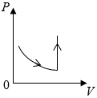</figure></div><div class="result-question-right">Doğru cavab:<figure class="image">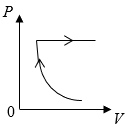</figure></div></li><li id="q354570" class="result-question right"><div class="result-question-body"><p>Verilmiş kütləli ideal qaz 1 halından 2 halına keçəndə təzyiqi necə dəyişər (p-təzyiq, V-həcmdir)?</p><figure class="image">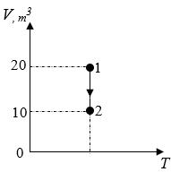</figure></div><div class="result-question-answer">Verilmiş Cavab:<p><math xmlns="http://www.w3.org/1998/Math/MathML"><mn>2</mn></math>�dəfə artar</p></div><div class="result-question-right">Doğru cavab:<p><math xmlns="http://www.w3.org/1998/Math/MathML"><mn>2</mn></math>�dəfə artar</p></div></li><li id="q355000" class="result-question right"><div class="result-question-body"><p>Bir maddənin molekullarının başqa bir maddənin molekulları arasındakı fəzaya daxil olması nə adlanır?</p></div><div class="result-question-answer">Verilmiş Cavab:<p>diffuziya</p></div><div class="result-question-right">Doğru cavab:<p>diffuziya</p></div></li><li id="q354700" class="result-question right"><div class="result-question-body"><p><math xmlns="http://www.w3.org/1998/Math/MathML"><mn>1</mn><mo>�</mo><mi>k</mi><mi>q</mi></math>�kütləli cisim çevrə üzrə bərabərsürətlə hərəkət edərək çevrənin�<math xmlns="http://www.w3.org/1998/Math/MathML"><mfrac><mn>1</mn><mn>2</mn></mfrac></math>�hissəsini�<math xmlns="http://www.w3.org/1998/Math/MathML"><mn>2</mn></math>�saniyə ərzində gedir. Bu müddət ərzində cismin impuls dəyişməsini tapın. Çevrənin radiusu�<math xmlns="http://www.w3.org/1998/Math/MathML"><mn>1</mn><mo>,</mo><mn>2</mn><mo>�</mo><mi>m</mi></math>-dir (<math xmlns="http://www.w3.org/1998/Math/MathML"><mi mathvariant="normal">π</mi><mo>=</mo><mn>3</mn></math>).</p></div><div class="result-question-answer">Verilmiş Cavab:<p><math xmlns="http://www.w3.org/1998/Math/MathML"><mn>3</mn><mo>,</mo><mn>6</mn><mfrac><mrow><mi>k</mi><mi>q</mi><mo>·</mo><mi>m</mi></mrow><mrow><mi>s</mi><mi>a</mi><mi>n</mi></mrow></mfrac></math></p></div><div class="result-question-right">Doğru cavab:<p><math xmlns="http://www.w3.org/1998/Math/MathML"><mn>3</mn><mo>,</mo><mn>6</mn><mfrac><mrow><mi>k</mi><mi>q</mi><mo>·</mo><mi>m</mi></mrow><mrow><mi>s</mi><mi>a</mi><mi>n</mi></mrow></mfrac></math></p></div></li><li id="q354594" class="result-question right"><div class="result-question-body"><p>Hərəkət edən qatarın vaqonunda oturan adam hansı cismə nəzərən sükunətdədir?</p></div><div class="result-question-answer">Verilmiş Cavab:<p>vaqona</p></div><div class="result-question-right">Doğru cavab:<p>vaqona</p></div></li><li id="q354630" class="result-question wrong"><div class="result-question-body"><p>Kütlə vahidini maddə miqdarının vahidinə böləndə hansı fiziki kəmiyyətin vahidi alınar?</p></div><div class="result-question-answer">Verilmiş Cavab:<p>nisbi atom kütləsi</p></div><div class="result-question-right">Doğru cavab:<p>molyar kütlə</p></div></li><li id="q356170" class="result-question right"><div class="result-question-body"><p>Riyazi rəqqasın sürətinin zamandan asılılıq tənliyi�<math xmlns="http://www.w3.org/1998/Math/MathML"><mi>ν</mi><mo>=</mo><mn>20</mn><mi>sin</mi><mn>5</mn><mi>t</mi><mfenced><mfrac><mi>m</mi><mrow><mi>s</mi><mi>a</mi><mi>n</mi></mrow></mfrac></mfenced></math>�şəklindədir. Rəqqasın uzunluğunu hesablayın (<math xmlns="http://www.w3.org/1998/Math/MathML"><mi>g</mi><mo>=</mo><mn>10</mn><mfrac><mi>m</mi><mrow><mi>s</mi><mi>a</mi><msup><mi>n</mi><mn>2</mn></msup></mrow></mfrac></math>).</p></div><div class="result-question-answer">Verilmiş Cavab:<p><math xmlns="http://www.w3.org/1998/Math/MathML"><mn>40</mn><mo>�</mo><mi>s</mi><mi>m</mi></math></p></div><div class="result-question-right">Doğru cavab:<p><math xmlns="http://www.w3.org/1998/Math/MathML"><mn>40</mn><mo>�</mo><mi>s</mi><mi>m</mi></math></p></div></li><li id="q355151" class="result-question right"><div class="result-question-body"><p>Eninə dalğanın üzərində yerləşən�<math xmlns="http://www.w3.org/1998/Math/MathML"><mi>A</mi></math>�nöqtəsinin sürətinin (<math xmlns="http://www.w3.org/1998/Math/MathML"><mover><msub><mi>θ</mi><mi>A</mi></msub><mo>→</mo></mover></math>) istiqaməti göstərilmişdir. Dalğanın yayılma istiqamətini müəyyən edin.</p><figure class="image">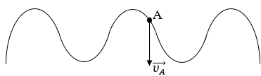</figure></div><div class="result-question-answer">Verilmiş Cavab:<p>Dalğa sağ tərəfə yayılar.</p></div><div class="result-question-right">Doğru cavab:<p>Dalğa sağ tərəfə yayılar.</p></div></li><li id="q354581" class="result-question wrong"><div class="result-question-body"><p>Ştrixlənmiş fiqurun sahəsi hansı fiziki kəmiyyətə bərabər olur (F-əvəzləyici qüvvə, t-qüvvənin təsir müddəti)?</p><figure class="image">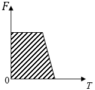</figure></div><div class="result-question-answer">Verilmiş Cavab:<p>qüvvə momenti</p></div><div class="result-question-right">Doğru cavab:<p>cismin impulsunun dəyişməsi</p></div></li><li id="q354944" class="result-question wrong"><div class="result-question-body"><p>Riyazi rəqqasın uzunluğu�<math xmlns="http://www.w3.org/1998/Math/MathML"><mn>10</mn><mo>�</mo><mi>s</mi><mi>m</mi></math>�olarsa, rəqsi hərəkətə başladıqdan�<math xmlns="http://www.w3.org/1998/Math/MathML"><mn>3</mn></math>�saniyə sonra cismin yerdəyişməsi nə qədər olar? Rəqsin amplitudu�<math xmlns="http://www.w3.org/1998/Math/MathML"><mn>0</mn><mo>,</mo><mn>5</mn><mo>�</mo><mi>m</mi></math>-dir (<math xmlns="http://www.w3.org/1998/Math/MathML"><mi>g</mi><mo>=</mo><mn>10</mn><mfrac><mi>m</mi><mrow><mi>s</mi><mi>a</mi><msup><mi>n</mi><mn>2</mn></msup></mrow></mfrac></math>;�<math xmlns="http://www.w3.org/1998/Math/MathML"><mi mathvariant="normal">π</mi><mo>=</mo><mn>3</mn></math>).</p><figure class="image">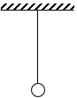</figure></div><div class="result-question-answer">Verilmiş Cavab:<p><math xmlns="http://www.w3.org/1998/Math/MathML"><mn>3</mn><mo>�</mo><mi>m</mi></math></p></div><div class="result-question-right">Doğru cavab:<p><math xmlns="http://www.w3.org/1998/Math/MathML"><mn>0</mn></math></p></div></li><li id="q354653" class="result-question wrong"><div class="result-question-body"><p>İzotermin prosesde verilmiş kütləsi ideal qazın təzyiqi 4 dəfə azalarsa, temperaturu necə dəyişər?</p></div><div class="result-question-answer">Verilmiş Cavab:<p>4 dəfə azalar</p></div><div class="result-question-right">Doğru cavab:<p>dəyişməz</p></div></li><li id="q355152" class="result-question wrong"><div class="result-question-body"><p>Yer səthindən hansı�<math xmlns="http://www.w3.org/1998/Math/MathML"><mi>h</mi></math>�hündürlükdə cismə təsir edən ağırlıq�<math xmlns="http://www.w3.org/1998/Math/MathML"><mn>75</mn><mo>%</mo></math>�azalar (<math xmlns="http://www.w3.org/1998/Math/MathML"><mi>R</mi></math>-yerin radiusudur)?</p></div><div class="result-question-answer">Verilmiş Cavab:<p><math xmlns="http://www.w3.org/1998/Math/MathML"><mi>h</mi><mo>=</mo><msqrt><mn>2</mn></msqrt><mo>�</mo><mi>R</mi></math></p></div><div class="result-question-right">Doğru cavab:<p><math xmlns="http://www.w3.org/1998/Math/MathML"><mi>h</mi><mo>=</mo><mi>R</mi></math></p></div></li><li id="q354614" class="result-question wrong"><div class="result-question-body"><p>Cismin sürətinin proyeksiyasının zamandan asılılıq qrafiki verilmişdir. Cismin koordinatının zamandan asılılıq tənliyi hansı ola bilər?</p><figure class="image">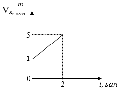</figure></div><div class="result-question-answer">Verilmiş Cavab:<p><math xmlns="http://www.w3.org/1998/Math/MathML"><mi>X</mi><mo>=</mo><mn>10</mn><mo>+</mo><mn>2</mn><mi>t</mi></math></p></div><div class="result-question-right">Doğru cavab:<p><math xmlns="http://www.w3.org/1998/Math/MathML"><mi>X</mi><mo>=</mo><mo>-</mo><mn>2</mn><mo>+</mo><mi>t</mi><mo>+</mo><msup><mi>t</mi><mn>2</mn></msup></math></p></div></li><li id="q356182" class="result-question right"><div class="result-question-body"><p>Maddi nöqtə çevrə üzrə bərabərsürətlə saat əqrəbinin hərəkətinin əksi istiqamətində hərəkət edir. Dövretmə periodu 10 saniyədir. Maddi nöqtə 1 nöqtəsindən keçdikdən ən azı neçə saniyə sonra 4 nöqtəsində olar?</p><figure class="image">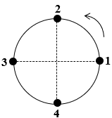</figure></div><div class="result-question-answer">Verilmiş Cavab:<p><math xmlns="http://www.w3.org/1998/Math/MathML"><mn>7</mn><mo>,</mo><mn>5</mn><mo>�</mo><mi>s</mi><mi>a</mi><mi>n</mi></math></p></div><div class="result-question-right">Doğru cavab:<p><math xmlns="http://www.w3.org/1998/Math/MathML"><mn>7</mn><mo>,</mo><mn>5</mn><mo>�</mo><mi>s</mi><mi>a</mi><mi>n</mi></math></p></div></li><li id="q355157" class="result-question wrong"><div class="result-question-body"><p>Vahidi nyuton olan fiziki kəmiyyəti ölçən cihazın iş prinsipi hansı qanuna əsaslanır?</p></div><div class="result-question-answer">Verilmiş Cavab:<p>Ümumdünya cazibə qanunu</p></div><div class="result-question-right">Doğru cavab:<p>Huk qanunu</p></div></li><li id="q356190" class="result-question right"><div class="result-question-body"><p>Cismin havada çəkisi�<math xmlns="http://www.w3.org/1998/Math/MathML"><mn>40</mn><mo>�</mo><mi>N</mi></math>, mayedə çəkisi�<math xmlns="http://www.w3.org/1998/Math/MathML"><mn>15</mn><mo> </mo><mi>N</mi></math>�olarsa, Arximed qüvvəsi neçə nyutondur?</p></div><div class="result-question-answer">Verilmiş Cavab:<p><math xmlns="http://www.w3.org/1998/Math/MathML"><mn>25</mn><mo>�</mo><mi>N</mi></math></p></div><div class="result-question-right">Doğru cavab:<p><math xmlns="http://www.w3.org/1998/Math/MathML"><mn>25</mn><mo>�</mo><mi>N</mi></math></p></div></li><li id="q354946" class="result-question wrong"><div class="result-question-body"><p>Verilmiş kütləli qaz bir haldan başqa hala keçdikdə�<math xmlns="http://www.w3.org/1998/Math/MathML"><mfrac><msub><mi>P</mi><mn>1</mn></msub><msub><mi>T</mi><mn>1</mn></msub></mfrac><mo>=</mo><mfrac><msub><mi>P</mi><mn>2</mn></msub><msub><mi>T</mi><mn>2</mn></msub></mfrac></math>�münasibəti ödənilmişdir. Hansı qrafik bu prosesə uyğundur?</p><figure class="image">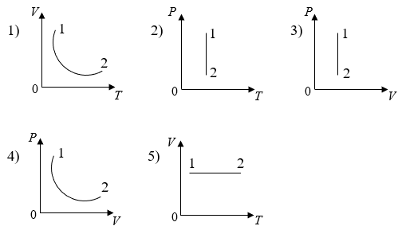</figure></div><div class="result-question-answer">Verilmiş Cavab:<p>1 və 5</p></div><div class="result-question-right">Doğru cavab:<p>3 və 5</p></div></li><li id="q355155" class="result-question wrong"><div class="result-question-body"><p>Kütləsi�<math xmlns="http://www.w3.org/1998/Math/MathML"><mn>0</mn><mo>,</mo><mn>5</mn><mo>�</mo><mi>k</mi><mi>q</mi></math>�olan cismin hərəkət zamanı koordinatının zamandan asılılıq tənliyi�<math xmlns="http://www.w3.org/1998/Math/MathML"><mi>x</mi><mo>=</mo><mn>4</mn><mo>+</mo><mn>2</mn><mi>t</mi></math>�şəklində olmuşdur. Hərəkət başlayandan�<math xmlns="http://www.w3.org/1998/Math/MathML"><mi>t</mi><mo>=</mo><mn>3</mn><mo>�</mo><mi>s</mi><mi>a</mi><mi>n</mi></math>�sonra cismin kinetik enerjisinin dəyişməsi nə qədər olar?</p></div><div class="result-question-answer">Verilmiş Cavab:<p><math xmlns="http://www.w3.org/1998/Math/MathML"><mn>400</mn><mo>�</mo><mi>C</mi></math></p></div><div class="result-question-right">Doğru cavab:<p><math xmlns="http://www.w3.org/1998/Math/MathML"><mn>0</mn></math></p></div></li><li id="q355154" class="result-question wrong"><div class="result-question-body"><p>Borunun geniş hissəsində mayenin sürəti�<math xmlns="http://www.w3.org/1998/Math/MathML"><mn>2</mn><mfrac><mi>m</mi><mrow><mi>s</mi><mi>a</mi><mi>n</mi></mrow></mfrac></math>�olarsa, dar hissəsində mayenin sürəti nə qədər olar?</p><figure class="image">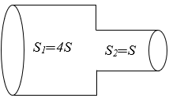</figure></div><div class="result-question-answer">Verilmiş Cavab:<p><math xmlns="http://www.w3.org/1998/Math/MathML"><mn>2</mn><mfrac><mi>m</mi><mrow><mi>s</mi><mi>a</mi><mi>n</mi></mrow></mfrac></math></p></div><div class="result-question-right">Doğru cavab:<p><math xmlns="http://www.w3.org/1998/Math/MathML"><mn>8</mn><mfrac><mi>m</mi><mrow><mi>s</mi><mi>a</mi><mi>n</mi></mrow></mfrac></math></p></div></li><li id="q355237" class="result-question wrong"><div class="result-question-body"><p>İdeal qaz molekullarının istilik hərəkətinin orta kvadratik sürətinin qazın mütləq temperaturundan asılılıq qrafiki verilmişdir.�<math xmlns="http://www.w3.org/1998/Math/MathML"><mn>1</mn></math>�nöqtəsində molekulların orta kvadratik sürəti�<math xmlns="http://www.w3.org/1998/Math/MathML"><msub><mi>V</mi><mn>0</mn></msub></math>, qazın temperaturu isə�<math xmlns="http://www.w3.org/1998/Math/MathML"><msub><mi>T</mi><mn>0</mn></msub></math>�olmuşdur.�<math xmlns="http://www.w3.org/1998/Math/MathML"><mn>2</mn></math>�nöqtəsində molekulların orta kvadratik sürəti�<math xmlns="http://www.w3.org/1998/Math/MathML"><mn>2</mn><msub><mi>V</mi><mn>0</mn></msub></math>�olarsa, həmin nöqtədə qazın mütləq temperaturu nə qədər olar (<math xmlns="http://www.w3.org/1998/Math/MathML"><mi>M</mi><mo>=</mo><mi>c</mi><mi>o</mi><mi>u</mi><mi>s</mi><mi>t</mi></math>)?</p><figure class="image">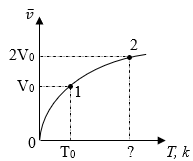</figure></div><div class="result-question-answer">Verilmiş Cavab:<p><math xmlns="http://www.w3.org/1998/Math/MathML"><mn>2</mn><msub><mi>T</mi><mn>0</mn></msub></math></p></div><div class="result-question-right">Doğru cavab:<p><math xmlns="http://www.w3.org/1998/Math/MathML"><mn>4</mn><msub><mi>T</mi><mn>0</mn></msub></math></p></div></li><li id="q356168" class="result-question wrong"><div class="result-question-body"><p>Əvəzləyici qüvvə�<math xmlns="http://www.w3.org/1998/Math/MathML"><mn>16</mn><mo>�</mo><mi>N</mi></math>�olduqda,�<math xmlns="http://www.w3.org/1998/Math/MathML"><mi>m</mi></math>�kütləli cismin aldığı təcil�<math xmlns="http://www.w3.org/1998/Math/MathML"><mi>a</mi></math>�olur. Əvəzləyici qüvvənin hansı qiymətində�<math xmlns="http://www.w3.org/1998/Math/MathML"><mfrac><mi>m</mi><mn>2</mn></mfrac></math>�kütləli cismin aldığı təcil�<math xmlns="http://www.w3.org/1998/Math/MathML"><mfrac><mi>a</mi><mn>4</mn></mfrac></math>�olar?</p></div><div class="result-question-answer">Verilmiş Cavab:<p><math xmlns="http://www.w3.org/1998/Math/MathML"><mn>8</mn><mo>�</mo><mi>N</mi></math></p></div><div class="result-question-right">Doğru cavab:<p><math xmlns="http://www.w3.org/1998/Math/MathML"><mn>2</mn><mo>�</mo><mi>N</mi></math></p></div></li><li id="q356230" class="result-question wrong"><div class="result-question-body"><p>Kütləsi�<math xmlns="http://www.w3.org/1998/Math/MathML"><mn>5</mn><mo>�</mo><mi>k</mi><mi>q</mi></math>�olan ling�<math xmlns="http://www.w3.org/1998/Math/MathML"><mover><mi>F</mi><mo>→</mo></mover></math>�qüvvəsinin təsiri altında tarazlıqdadır. Dayağın reaksiya qüvvəsi neçə nyutondur (<math xmlns="http://www.w3.org/1998/Math/MathML"><mi>g</mi><mo>=</mo><mn>10</mn><mfrac><mi>m</mi><mrow><mi>s</mi><mi>a</mi><msup><mi>n</mi><mn>2</mn></msup></mrow></mfrac></math>)?</p><figure class="image">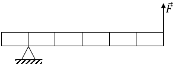</figure></div><div class="result-question-answer">Verilmiş Cavab: 50</div><div class="result-question-right">Doğru cavab: 30</div></li><li id="q356220" class="result-question wrong"><div class="result-question-body"><p>Hidravlik presin kiçik porşeni�<math xmlns="http://www.w3.org/1998/Math/MathML"><mi>h</mi></math>�qədər aşağı enəndə böyük porşen�<math xmlns="http://www.w3.org/1998/Math/MathML"><mfrac><mi>h</mi><mn>5</mn></mfrac></math>�qədər yuxarı qalxır. Hidravlik pres qüvvədə neçə dəfə qazanc verir?</p></div><div class="result-question-answer">Verilmiş Cavab: 4</div><div class="result-question-right">Doğru cavab: 5</div></li><li id="q356206" class="result-question wrong"><div class="result-question-body"><p>Təkliflərdən hansı(lar) doğrudur?</p><p>1. Maddənin vahid həcmə düşən kütləsinə sıxlıq deyilir.<br>2. Cisimlərin qarşılıqlı vəziyyəti ilə müəyyən olunan enerji kinetik enerji adlanır.<br>3. Hər bir cismin ətrafında qravitasiya sahəsi yaranır.<br>4. Arximed qüvvəsi şaquli aşağı yönəlir.<br>5. Mayelərin hidrostatik təzyiqi qabın oturacağın sahəsindən tərs mütənasib asılıdır.</p></div><div class="result-question-answer">Verilmiş Cavab: 35</div><div class="result-question-right">Doğru cavab: 13</div></li><li id="q356209" class="result-question empty"><div class="result-question-body"><p>Təzyiq qüvvəsini dəyişmədən səthin sahəsini�<math xmlns="http://www.w3.org/1998/Math/MathML"><mn>0</mn><mo>,</mo><mn>03</mn><mo>�</mo><msup><mi>m</mi><mn>2</mn></msup></math>�azaltdıqda təzyiq�<math xmlns="http://www.w3.org/1998/Math/MathML"><mn>2</mn></math>�dəfə artmışdır. İlk anda səthin sahəsi neçə�<math xmlns="http://www.w3.org/1998/Math/MathML"><msup><mi>m</mi><mn>2</mn></msup></math>�olmuşdur?</p></div><div class="result-question-answer">Verilmiş Cavab: Boş</div><div class="result-question-right">Doğru cavab: 0.06</div></li><li id="q356232" class="result-question wrong"><div class="result-question-body"><p>Verilmiş kütləli ideal qaz üzərində dairəvi proses aparılmışdır (p-qazın təzyiqi, T-qazın temperaturudur).</p><p>Uyğunluğu müəyyən edin.</p><p>1.<i> AB hissəsində</i><br>2. <i>BC hissəsində</i><br>3. <i>CA hissəsində</i></p><p>a. qazın həcmi artır.<br>b. qazın həcmi azalır.<br>c. qazın həcmi dəyişmir.<br>d. molekulların konsentrasiyası artır.<br>e. molekulların orta kinetik enerjisi artır.</p><figure class="image">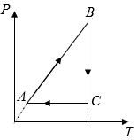</figure></div><div class="result-question-answer">Verilmiş Cavab: 1ad2bc3e</div><div class="result-question-right">Doğru cavab: 1ce2a3bd</div></li><li id="q356310" class="result-question empty"><div class="result-question-body"><p>Üfüqi səthdə hərəkət edən cismin koordinatının zamandan asılılıq tənliyi�<math xmlns="http://www.w3.org/1998/Math/MathML"><mi>x</mi><mo>=</mo><mn>10</mn><mo>-</mo><mn>2</mn><mi>t</mi><mo>(</mo><mi>m</mi><mo>)</mo></math>�şəklindədir. 2-ci saniyənin sonunda cismin kinetik enerjisi neçə couldur (cismin kütləsi�<math xmlns="http://www.w3.org/1998/Math/MathML"><mn>4</mn><mo>�</mo><mi>k</mi><mi>q</mi></math>-dır)?</p><figure class="image"></figure></div><div class="result-question-answer">Verilmiş Cavab:<br>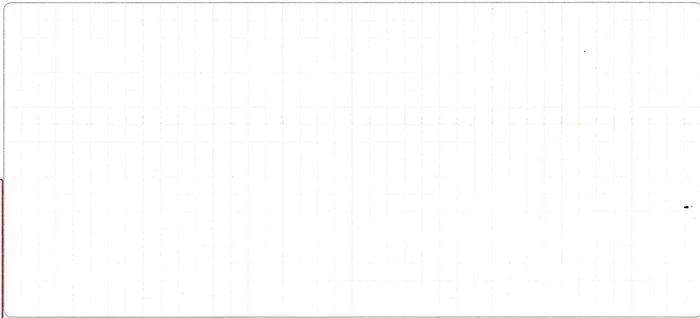<br></div><div class="result-question-explanation"><p>Cavab:�<math xmlns="http://www.w3.org/1998/Math/MathML"><mi>E</mi><mi>k</mi><mo>=</mo><mn>8</mn><mo>�</mo><mi>C</mi></math></p><p>Həlli:</p><p><math xmlns="http://www.w3.org/1998/Math/MathML"><mi>x</mi><mo>=</mo><mn>10</mn><mo>-</mo><mn>2</mn><mi>t</mi></math>�tənliyinə əsasən törəmə alsaq, sürətin qiyməti�<math xmlns="http://www.w3.org/1998/Math/MathML"><mo>|</mo><mi>v</mi><mo>|</mo><mo>�</mo><mo>=</mo><mo>�</mo><mn>2</mn><mfrac><mi>m</mi><mrow><mi>s</mi><mi>a</mi><mi>n</mi></mrow></mfrac></math>�olar. Şərtdə verilənə görə�<math xmlns="http://www.w3.org/1998/Math/MathML"><mi>m</mi><mo>=</mo><mn>4</mn><mo>�</mo><mi>k</mi><mi>q</mi></math>-dır. Buradan kinetik enerjinin düsturunda qiymətləri nəzərə alsaq,�<math xmlns="http://www.w3.org/1998/Math/MathML"><mi>E</mi><mi>k</mi><mo>=</mo><mo>(</mo><mfrac><mn>1</mn><mn>2</mn></mfrac><mo>)</mo><mo>·</mo><mi>m</mi><mo>·</mo><mi>v</mi><mo>²</mo><mo>�</mo><mo>=</mo><mn>8</mn><mo>�</mo><mi>C</mi></math>�olar.</p><p>Meyar:</p><figure class="table"><table><tbody><tr><td>1 bal</td><td>a. Şagird verilən həll üsulundan istifadə edərək, doğru hesablama aparmış, doğru cavab almışdır;<br>b. Düstur yazılmadan düstura uyğun doğru hesablama aparılmışdır və cavab doğru tapılmışdır;</td></tr><tr><td>2/3 bal</td><td>c. Doğru düsturdan istifadə olunmuş,�doğru hesablama aparılmış, riyazi səhvə görə cavab səhv alınmışdır;<br>d. Düsturlar yazılmadan�hesablama aparılmış, lakin riyazi səhvə görə cavab səhv alınmışdır;<br>e. Koordinatın törəməsinin sürət olduğunu qeyd etmiş, kinetik enerjinin də�<math xmlns="http://www.w3.org/1998/Math/MathML"><mi>E</mi><mi>k</mi><mo>�</mo><mo>=</mo><mo>�</mo><mo>(</mo><mfrac><mn>1</mn><mn>2</mn></mfrac><mo>)</mo><mo>·</mo><mi>m</mi><mo>·</mo><mi>v</mi><mo>²</mo></math><strong>�</strong>düsturu ilə tapıldığını qeyd etmiş, lakin törəməni səhv tapdığına görə cavab səhv alınmışdır;</td></tr><tr><td>1/3 bal</td><td>f.<strong>�</strong><math xmlns="http://www.w3.org/1998/Math/MathML"><mi>E</mi><mi>k</mi><mo>�</mo><mo>=</mo><mo>�</mo><mo>(</mo><mfrac><mn>1</mn><mn>2</mn></mfrac><mo>)</mo><mo>·</mo><mi>m</mi><mo>·</mo><mi>v</mi><mo>²</mo></math>�düsturunu qeyd etmiş, lakin hesablama aparmamışdır;<br>g. Törəməni doğru alaraq�<math xmlns="http://www.w3.org/1998/Math/MathML"><mi>v</mi><mo>=</mo><mn>2</mn><mo>�</mo><mfrac><mi>m</mi><mrow><mi>s</mi><mi>a</mi><mi>n</mi></mrow></mfrac></math>�olduğunu yazmış, lakin enerjinin düsturu səhv yazıldığına görə cavab alınmamışdır;<br>h. Heç bir düstur yazılmadan�<math xmlns="http://www.w3.org/1998/Math/MathML"><mi>E</mi><mi>k</mi><mo>=</mo><mo>(</mo><mfrac><mn>1</mn><mn>2</mn></mfrac><mo>)</mo><mo>·</mo><mi>m</mi><mo>·</mo><mi>v</mi><mo>²</mo></math>�düsturuna görə hesablama aparılaraq cavabın�<math xmlns="http://www.w3.org/1998/Math/MathML"><mn>8</mn><mo>�</mo><mi>C</mi></math>�olduğunu yazmışdır;</td></tr><tr><td>0 bal</td><td>x. Başqa sualın həlli yazılmışdır;<br>i. Digər bütün hallarda</td></tr></tbody></table></figure></div><div class="result-question-answer">Qiymətləndirmə: 0</div></li><li id="q357286" class="result-question empty"><div class="result-question-body"><p>Cisim müəyyən hündürlükdən sərbəst buraxılmış və sərbəst düşməyə başlamışdır. Hərəkətə başlayandan sonra müəyyən anda qüvvə impulsu�<math xmlns="http://www.w3.org/1998/Math/MathML"><mn>20</mn><mo>·</mo><mi>N</mi><mo>·</mo><mi>s</mi><mi>a</mi><mi>n</mi></math>�olmuşdur. Həmin anda cismin sürəti nə qədər olmuşdur (cismin kütləsi�<math xmlns="http://www.w3.org/1998/Math/MathML"><mn>2</mn><mo>�</mo><mi>k</mi><mi>q</mi></math>-dır, havanın müqaviməti nəzərə alınmır,�<math xmlns="http://www.w3.org/1998/Math/MathML"><mi>g</mi><mo>=</mo><mn>10</mn><mfrac><mi>m</mi><mrow><mi>s</mi><mi>a</mi><msup><mi>n</mi><mn>2</mn></msup></mrow></mfrac></math>,�<math xmlns="http://www.w3.org/1998/Math/MathML"><msub><mi>v</mi><mn>0</mn></msub><mo>=</mo><mn>0</mn></math>)?</p></div><div class="result-question-answer">Verilmiş Cavab:<br>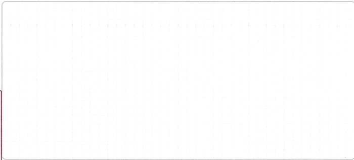<br></div><div class="result-question-explanation"><p>Cavab:�<math xmlns="http://www.w3.org/1998/Math/MathML"><mn>10</mn><mfrac><mi>m</mi><mrow><mi>s</mi><mi>a</mi><mi>n</mi></mrow></mfrac></math></p><p>1 ci üsul:</p><p>Verilənlər:<br><math xmlns="http://www.w3.org/1998/Math/MathML"><mi>m</mi><mo>=</mo><mn>2</mn><mo>�</mo><mi>k</mi><mi>q</mi></math><br><math xmlns="http://www.w3.org/1998/Math/MathML"><mi>g</mi><mo>=</mo><mn>10</mn><mfrac><mi>m</mi><mrow><mi>s</mi><mi>a</mi><msup><mi>n</mi><mn>2</mn></msup></mrow></mfrac></math><br><math xmlns="http://www.w3.org/1998/Math/MathML"><mi>Δ</mi><mi>p</mi><mo>=</mo><mn>20</mn><mo>�</mo><mi>N</mi><mo>·</mo><mi>s</mi><mi>a</mi><mi>n</mi></math><br>Qüvvənin�<math xmlns="http://www.w3.org/1998/Math/MathML"><mi>F</mi><mo>=</mo><mi>m</mi><mo>·</mo><mi>g</mi><mo>=</mo><mn>20</mn><mo>�</mo><mi>N</mi></math>�olduğunu bilərək,�digər tərəfdən�<math xmlns="http://www.w3.org/1998/Math/MathML"><mi>Δ</mi><mi>p</mi><mo>=</mo><mi>F</mi><mo>·</mo><mi>t</mi></math>�düsturuna görə zamanı tapsaq,�<math xmlns="http://www.w3.org/1998/Math/MathML"><mn>20</mn><mo>=</mo><mn>20</mn><mo>·</mo><mi>t</mi><mo>→</mo><mi>t</mi><mo>�</mo><mo>=</mo><mn>1</mn></math>�<math xmlns="http://www.w3.org/1998/Math/MathML"><mi>s</mi><mi>a</mi><mi>n</mi></math>�olur. Sərbəst düşmə zamanı�<math xmlns="http://www.w3.org/1998/Math/MathML"><mi>v</mi><mo>�</mo><mo>=</mo><mi>g</mi><mo>·</mo><mi>t</mi></math>�düsturundan�<math xmlns="http://www.w3.org/1998/Math/MathML"><mi>v</mi><mo>=</mo><mn>10</mn><mfrac><mi>m</mi><mrow><mi>s</mi><mi>a</mi><mi>n</mi></mrow></mfrac></math>�olur.</p><p>2 ci üsul:<br>Başlanğıc sürətin�<math xmlns="http://www.w3.org/1998/Math/MathML"><mi>v</mi><mo>=</mo><mn>0</mn></math>�olduğuna görə qüvvə impulsunu�<math xmlns="http://www.w3.org/1998/Math/MathML"><mi>Δ</mi><mi>p</mi><mo>=</mo><mi>m</mi><mi>v</mi></math>�kimi yazmaq olar. Buradan da verilənləri yerinə qoysaq, sürət�<math xmlns="http://www.w3.org/1998/Math/MathML"><mi>v</mi><mo>=</mo><mn>10</mn><mfrac><mi>m</mi><mrow><mi>s</mi><mi>a</mi><mi>n</mi></mrow></mfrac></math>�alınar.</p><p>Meyar:</p><figure class="table"><table><tbody><tr><td>1 bal</td><td>a. Şagird verilən həll üsulundan istifadə edərək doğru hesablama aparmış, doğru cavab almışdır;<br>b. Düstur yazılmadan düstura uyğun doğru hesablama aparılmışdır və cavab doğru tapılmışdır;</td></tr><tr><td>2/3 bal</td><td>c. Doğru düsturdan istifadə olunmuş, doğru hesablama aparılmış, riyazi səhvə görə cavab səhv alınmışdır;<br>d. Düsturlar yazılmadan hər hansı birinə�uyğun hesablama aparılmış, lakin riyazi səhvə görə cavab səhv alınmışdır;<br>e.�<math xmlns="http://www.w3.org/1998/Math/MathML"><mi>v</mi><mo>=</mo><mi>g</mi><mi>t</mi></math>�düsturunu qeyd etmiş, zamanın�<math xmlns="http://www.w3.org/1998/Math/MathML"><mi>t</mi><mo>=</mo><mn>1</mn><mo>�</mo><mi>s</mi><mi>a</mi><mi>n</mi></math>�qiymətinə uyğun hesablama aparmış, lakin zamanın tapılma qaydasını yazmamışdır;</td></tr><tr><td>1/3 bal</td><td>f.�<math xmlns="http://www.w3.org/1998/Math/MathML"><mi>p</mi><mo>=</mo><mi>m</mi><mi>v</mi></math>�düsturunu qeyd etmiş, lakin hesablama aparmamışdır;<br>g.�<math xmlns="http://www.w3.org/1998/Math/MathML"><mi>v</mi><mo>=</mo><mi>g</mi><mi>t</mi></math>�düsturu qeyd olunmuş, lakin hesablama aparılmamış və ya səhv aparılmışdır;<br>h. Heç bir düstur yazılmadan zamanın�<math xmlns="http://www.w3.org/1998/Math/MathML"><mi>t</mi><mo>=</mo><mn>1</mn><mo>�</mo><mi>s</mi><mi>a</mi><mi>n</mi></math>�qiymətinə uyğun olaraq�<math xmlns="http://www.w3.org/1998/Math/MathML"><mi>v</mi><mo>=</mo><mi>g</mi><mi>t</mi></math>�düsturuna görə hesablama apararaq cavabın�<math xmlns="http://www.w3.org/1998/Math/MathML"><mn>10</mn><mo>�</mo><mi>m</mi><mo>/</mo><mi>s</mi><mi>a</mi><mi>n</mi></math>�olduğunu yazmışdır;</td></tr><tr><td>0 bal</td><td>x. Başqa sualın həlli yazılmışdır;<br>i. Digər bütün hallarda</td></tr></tbody></table></figure></div><div class="result-question-answer">Qiymətləndirmə: 0</div></li><li id="q356234" class="result-question empty"><div class="result-question-body"><p>Kütləsi�<math xmlns="http://www.w3.org/1998/Math/MathML"><mn>4</mn><mo>�</mo><mi>k</mi><mi>q</mi></math>�olan cisim mail müstəvisindədir. Mail müstəvinin hündürlüyü�<math xmlns="http://www.w3.org/1998/Math/MathML"><mn>3</mn><mo>�</mo><mi>m</mi></math>, oturacağı�<math xmlns="http://www.w3.org/1998/Math/MathML"><mn>4</mn><mo>�</mo><mi>m</mi></math>-dir. Cismin çəkisi neçə nyutondur (<math xmlns="http://www.w3.org/1998/Math/MathML"><mi>g</mi><mo>=</mo><mn>10</mn><mfrac><mi>m</mi><mrow><mi>s</mi><mi>a</mi><msup><mi>n</mi><mn>2</mn></msup></mrow></mfrac></math>)?</p><figure class="image">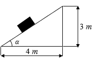</figure></div><div class="result-question-answer">Verilmiş Cavab:<br>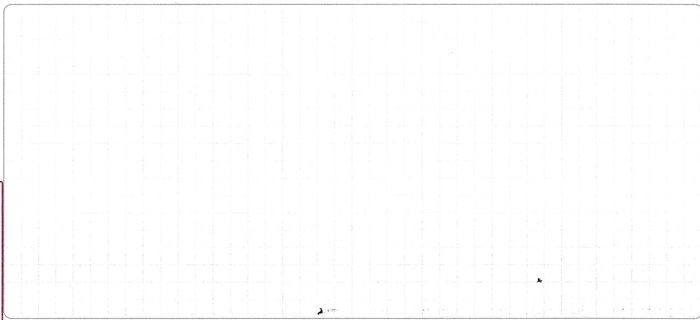<br></div><div class="result-question-explanation"><p>Cavab:�<math xmlns="http://www.w3.org/1998/Math/MathML"><mn>32</mn><mo>�</mo><mi>N</mi></math></p><p>Həlli:</p><p>Verilənlər:<br><math xmlns="http://www.w3.org/1998/Math/MathML"><mi>m</mi><mo>=</mo><mn>4</mn><mo>�</mo><mi>k</mi><mi>q</mi></math><br><math xmlns="http://www.w3.org/1998/Math/MathML"><mi>h</mi><mo>=</mo><mn>3</mn><mo>�</mo><mi>m</mi></math><br>Oturacaq=<math xmlns="http://www.w3.org/1998/Math/MathML"><mn>4</mn><mo>�</mo><mi>m</mi></math><br><math xmlns="http://www.w3.org/1998/Math/MathML"><mi>g</mi><mo>=</mo><mn>10</mn><mfrac><mi>m</mi><mrow><mi>s</mi><mi>a</mi><msup><mi>n</mi><mn>2</mn></msup></mrow></mfrac></math></p><p>Mail müstəvisi düzbucaqlı üçbucağı təşkil edir. Pifaqor teoreminə görə hipotenuz�<math xmlns="http://www.w3.org/1998/Math/MathML"><mn>5</mn><mo>�</mo><mi>m</mi></math>�alınır. Digər tərəfdən bucağın sinusu qarşıdakı katetin hipotenuza nisbətinə, bucağın cosinusu isə bitişik katetin hipotonuza nisbətidir. Yəni,�<math xmlns="http://www.w3.org/1998/Math/MathML"><mi>sin</mi><mi>α</mi><mo>�</mo><mo>=</mo><mfrac><mn>3</mn><mn>5</mn></mfrac></math>,�<math xmlns="http://www.w3.org/1998/Math/MathML"><mi>cos</mi><mi>α</mi><mo>�</mo><mo>=</mo><mo>�</mo><mfrac><mn>4</mn><mn>5</mn></mfrac></math><strong>�</strong>alınar. Çəkinin istiqaməti aşağıya olduğu üçün reaksiya qüvvəsi (təzyiq qüvvəsi) ilə bərabərləşir və reaksiya qüvvəsi (təzyiq qüvvəsi) yuxarı yönələn toplanana əsasən�<math xmlns="http://www.w3.org/1998/Math/MathML"><mi>cos</mi></math>�ilə hesablanır və bu elə çəkiyə bərabər olur. Perpendikulyar olan çəkinin tərkib hissəsi (təzyiq qüvvəsi):�<math xmlns="http://www.w3.org/1998/Math/MathML"><mi>P</mi><mo>⊥</mo><mo>=</mo><mi>m</mi><mi>g</mi><mo>·</mo><mi>cos</mi><mi>α</mi></math>�düsturu ilə hesablanır. Qiymətləri yerinə qoysaq,�<math xmlns="http://www.w3.org/1998/Math/MathML"><mi>p</mi><mo>�</mo><mo>=</mo><mn>4</mn><mo>·</mo><mn>10</mn><mo>·</mo><mfrac><mn>4</mn><mn>5</mn></mfrac><mo>=</mo><mn>32</mn><mo>�</mo><mi>N</mi></math>�alınar.</p><p>Meyar:</p><figure class="table"><table><tbody><tr><td>1 bal</td><td>a. Şagird verilən həll üsulundan istifadə edərək doğru hesablama aparmış, doğru cavab almışdır;<br>b. Düstur yazılmadan düstura uyğun doğru hesablama aparılmışdır və cavab doğru tapılmışdır;<br>c.�<math xmlns="http://www.w3.org/1998/Math/MathML"><mi>C</mi><mi>o</mi><mi>s</mi></math>�tapılma qaydasını demədən bir başa�<math xmlns="http://www.w3.org/1998/Math/MathML"><mn>0</mn><mo>,</mo><mn>8</mn></math>�qiymətini götürərək doğru hesablama aparmışdır;</td></tr><tr><td>2/3 bal</td><td>d. Doğru düsturdan istifadə olunmuş, doğru hesablama aparılmış, riyazi səhvə görə cavab səhv alınmışdır;<br>e. Düsturlar yazılmadan�hesablama aparılmış, lakin riyazi səhvə görə cavab səhv alınmışdır;�<br>f. Mail müstəvidə çəkinin�<math xmlns="http://www.w3.org/1998/Math/MathML"><mi>m</mi><mi>g</mi><mi>cos</mi></math>�ilə hesablandığını yazmış, lakin cosinusun qiymətini səhv tapdığına görə cavab səhv alınmışdır;</td></tr><tr><td>1/3 bal</td><td>g.�<math xmlns="http://www.w3.org/1998/Math/MathML"><mi>p</mi><mo>=</mo><mi>m</mi><mi>g</mi><mo>�</mo><mi>cos</mi></math>�olduğunu qeyd etmiş, lakin heç bir hesablama aparmamışdır;<br>h.<math xmlns="http://www.w3.org/1998/Math/MathML"><mo>�</mo><mi>p</mi><mo>=</mo><mi>m</mi><mi>g</mi></math>�taparaq hesablama aparmış, cavabı�<math xmlns="http://www.w3.org/1998/Math/MathML"><mi>p</mi><mo>=</mo><mn>40</mn><mo>�</mo><mi>N</mi></math>�qeyd etmişdir;</td></tr><tr><td>0 bal</td><td>x. Başqa sualın həlli yazılmışdır;<br>i .Digər bütün hallarda</td></tr></tbody></table></figure></div><div class="result-question-answer">Qiymətləndirmə: 0</div></li></ul></li><li class="result-subject"><h3 class="result-subject-name">İnformatika (Maksimum: 100)</h3><div class="result-subject-stats"><div>Doğru cavabların sayı: <strong>24</strong></div><div>Yanlış cavabların sayı: <strong>6</strong></div><div>Nəticə: <strong>86.6</strong></div></div><ul class="result-questions"><li id="q360208" class="result-question wrong"><div class="result-question-body"><p>Onluq say sistemində verilmiş 16<sup>n+3</sup> (n∈N) ədədini ikilik say sistemində təsvir etdikdə neçə rəqəmli ədəd olar?</p></div><div class="result-question-answer">Verilmiş Cavab:<p>2n<sup>2</sup>+12</p></div><div class="result-question-right">Doğru cavab:<p>4n+13</p></div></li><li id="q360193" class="result-question right"><div class="result-question-body"><p>Windows əməliyyat sistemi ilə bağlı verilmiş mülahizələrdən doğru <strong>olmayanı</strong> müəyyən edin.</p></div><div class="result-question-answer">Verilmiş Cavab:<p>Faylın adı 255 simvoldan az ola bilməz.</p></div><div class="result-question-right">Doğru cavab:<p>Faylın adı 255 simvoldan az ola bilməz.</p></div></li><li id="q360191" class="result-question right"><div class="result-question-body"><p>Hansı faylların öz həcmləri ilə diskdə tutduğu həcmləri eynidir? (1 klasterin həcmi = 4 Kbayt)</p><p>1. 108 Kbayt � � � � � � � 2. 24 Mbayt<br>3. 57 Kbayt � � � � � � � � 4. 510 Kbayt<br>5. 132 Mbayt � � � � � � �6. 13 Kbayt</p></div><div class="result-question-answer">Verilmiş Cavab:<p>1, 2, 5</p></div><div class="result-question-right">Doğru cavab:<p>1, 2, 5</p></div></li><li id="q360180" class="result-question wrong"><div class="result-question-body"><p>Şəkildə <i>A</i>, <i>B</i>,<i> C</i>, <i>D</i>,<i> E</i>, <i>F</i>,<i> G</i>,<i> L</i>,<i> M</i>,<i> N</i> şəhərlərini birləşdirən yolların sxemi göstərilib. Hər bir yolla yalnız oxla göstərilən istiqamətdə hərəkət etmək olar.<i> A</i> şəhərindən <i>N</i> şəhərinə <i>L</i> şəhərindən keçməməklə neçə müxtəlif yolla getmək olar?</p><figure class="image">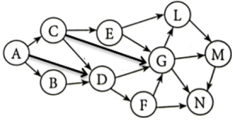</figure></div><div class="result-question-answer">Verilmiş Cavab:<p>21</p></div><div class="result-question-right">Doğru cavab:<p>19</p></div></li><li id="q360201" class="result-question wrong"><div class="result-question-body"><p>İfadənin nəticəsini Mbayt ilə ifadə edin.</p><p>2<sup>24 </sup>bit+2048 Kbayt–2<sup>20</sup> bayt</p></div><div class="result-question-answer">Verilmiş Cavab:<p>2</p></div><div class="result-question-right">Doğru cavab:<p>3</p></div></li><li id="q360176" class="result-question right"><div class="result-question-body"><p>Rastr qrafik təsvirin çevrilməsində üç əməliyyat icra edilmişdir:</p><p>1. Rəng palitrası RGB-dən, monoxrom palitraya dəyişdirilib.<br>2. Təsvirin en boyu olan piksellərin sayı 12 dəfə artırılıb.<br>3. Təsvirin hündürlük boyu olan piksellərinin sayı 4 dəfə azaldılıb.</p><p>Bu əməliyyatlardan sonra təsvirin informasiya həcmi necə dəyişər?</p></div><div class="result-question-answer">Verilmiş Cavab:<p>8 dəfə azalar</p></div><div class="result-question-right">Doğru cavab:<p>8 dəfə azalar</p></div></li><li id="q360198" class="result-question wrong"><div class="result-question-body"><p>Akif, Bahar, Cəmilə, Dilbər, Elnur, Fuad, Günay və Habil eyni universitetin İqtisadiyyat, Marketinq, Maliyyə, Beynəlxalq münasibətlər fakültələrində təhsil alır. Məlumdur ki:</p><p>- Hər fakültədə iki nəfər təhsil alır.<br>- Bahar beynəlxalq münasibətlər fakültəsində oxuyur.<br>- Cəmilə və Elnur eyni fakültədədir.<br>- Akif və Habil fərqli fakültədədir.<br>- Marketinq ixtisasında oxuyanlar oğlan deyil.</p><p>Aşağıdakılardan hansı mütləq doğrudur?</p></div><div class="result-question-answer">Verilmiş Cavab:<p>Akifin ixtisası maliyyədir.</p></div><div class="result-question-right">Doğru cavab:<p>Akif və Günay müxtəlif fakültələrdədir.</p></div></li><li id="q360224" class="result-question right"><div class="result-question-body"><p>Verilənlər bazasının modelləri ilə bağlı uyğunluğu müəyyən edin.</p><p>1. İyerarxik<br>2. Relyasiya<br>3. Şəbəkə</p><p>a. Verilənlərin nizamlı ağac şəklində təsvirinə əsaslanır.<br>b. Verilənlər bazası ikiölçülü cədvəl şəklində hazırlanır.<br>c. Aşağı səviyyədə yerləşən hər bir bənd daha yuxarı səviyyədəki yalnız bir bəndlə əlaqəli olur.<br>d. Hər bir element istənilən başqa elementlə əlaqəli ola bilər.<br>e. Verilənlər bazası modelinin əsas anlayışları sahə və yazılardır.</p></div><div class="result-question-answer">Verilmiş Cavab:<p>1-a, c; 2-b, e; 3-d</p></div><div class="result-question-right">Doğru cavab:<p>1-a, c; 2-b, e; 3-d</p></div></li><li id="q360166" class="result-question right"><div class="result-question-body"><p>İnformasiyanın növləri:</p></div><div class="result-question-answer">Verilmiş Cavab:<p>səs, görmə, taktil, dad, qoxu</p></div><div class="result-question-right">Doğru cavab:<p>səs, görmə, taktil, dad, qoxu</p></div></li><li id="q360172" class="result-question right"><div class="result-question-body"><p>Faylın tam adının düzgün ardıcıllığının göstərildiyi cavabı müəyyən edin.</p><p>1. .docx � � � � � � � � � � � � � � 2. C:\<br>3. İnformatika\ � � � � � � � � �4. \Testlər<br>5. Mövzular � � � � � � � � � � �6. \EHM</p></div><div class="result-question-answer">Verilmiş Cavab:<p>235461</p></div><div class="result-question-right">Doğru cavab:<p>235461</p></div></li><li id="q360178" class="result-question right"><div class="result-question-body"><p>Aşağıda iştirakçıların ifaçılıq bacarığı müsabiqəsi haqqında verilənlər bazasının əlaqələndirilmiş cədvəllərindən fraqment verilmişdir:</p><figure class="image">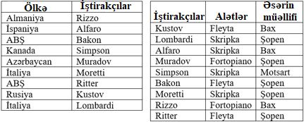</figure><p>Cədvəllərə görə neçə ölkənin nümayəndəsi Şopenin əsərini ifa edir?</p></div><div class="result-question-answer">Verilmiş Cavab:<p>3</p></div><div class="result-question-right">Doğru cavab:<p>3</p></div></li><li id="q360169" class="result-question wrong"><div class="result-question-body"><p>Elektron cədvəldə D7 xanasında "=SUM(D1:D5)" düsturunun 35-ə bərabər olan qiyməti saxlanılır. D6 xanasının qiyməti 17-dir. "=SUM(D1:D7)" düsturunun qiyməti neçəyə bərabər olar?</p></div><div class="result-question-answer">Verilmiş Cavab:<p>69</p></div><div class="result-question-right">Doğru cavab:<p>87</p></div></li><li id="q360204" class="result-question wrong"><div class="result-question-body"><p>Qurulmuş diaqramın aşağıdakı cədvəlin A2:C2 diapazonuna uyğun olması üçün verilmiş elektron cədvəl fraqmentində C1 xanasına hansı tam ədəd yazılmalıdır?</p><figure class="image">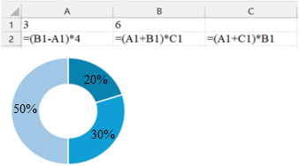</figure></div><div class="result-question-answer">Verilmiş Cavab:<p>4</p></div><div class="result-question-right">Doğru cavab:<p>2</p></div></li><li id="q360226" class="result-question wrong"><div class="result-question-body"><p>Verilənlər bazası fraqmentinə əsasən "NOT(Fizika > 45 AND Kimya < 60) AND (Cəbr >= 63 OR Biologiya > 65)" sorğusuna cavab verən yazıların sayını müəyyən edin.</p><figure class="image">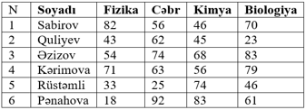</figure></div><div class="result-question-answer">Verilmiş Cavab:<p>1</p></div><div class="result-question-right">Doğru cavab:<p>2</p></div></li><li id="q360227" class="result-question wrong"><div class="result-question-body"><p>Tətbiqi proqramlar sinfinə aid<strong> olmayan</strong> proqramı müəyyən edin.</p></div><div class="result-question-answer">Verilmiş Cavab:<p>Adobe InDesign</p></div><div class="result-question-right">Doğru cavab:<p>Linux</p></div></li><li id="q360196" class="result-question wrong"><div class="result-question-body"><p>2, 3, 4, 5, 6, 7, 8 rəqəmlərindən istifadə edərək 300 ilə 800 arasında yerləşən və rəqəmləri müxtəlif olan neçə ədəd düzəltmək olar?</p></div><div class="result-question-answer">Verilmiş Cavab:<p>180</p></div><div class="result-question-right">Doğru cavab:<p>150</p></div></li><li id="q360174" class="result-question right"><div class="result-question-body"><p>Uyğunluğu müəyyən edin.</p><p>1. Funksional klavişlər<br>2. Xidməti klavişlər<br>3. Kursorun idarəolunması klavişləri</p><p>a. End � � � � � � � b. F4<br>c. Ctrl � � � � � � � �d. Shift<br>e. Page Up</p></div><div class="result-question-answer">Verilmiş Cavab:<p>1-b; 2-c, d; 3-a, e</p></div><div class="result-question-right">Doğru cavab:<p>1-b; 2-c, d; 3-a, e</p></div></li><li id="q360212" class="result-question wrong"><div class="result-question-body"><p>Mətn prosessorunda hazırlanmış sənədin ilkin variantı 3 abzasdan ibarətdir:</p><p>1-ci abzas (I)<br>2-ci abzas (II)<br>3-cü abzas (III)</p><p>Yuxarıdakı qaydada ardıcıl düzülmüş abzaslar üçün 3 əməliyyat yerinə yetirilir:</p><p>1. 1-ci abzas (I) seçilir və "Ctrl+C" klavişlər kombinasiyası basılır.<br>2. 3-cü abzasın (III) əvvəlinə kursor gətirilir, "Ctrl+V" klavişlər kombinasiyası basılır və bu əməliyyat yenidən icra olunur.<br>3. 2-ci abzas (II) seçilir və "Ctrl+X" klavişlər kombinasiyası basılır.</p><p>Bu əməliyyatların aparılmasından sonra ilkin olaraq I, II və III kimi nömrələnmiş abzaslar hansı ardıcıllıqla düzülmüş olar?</p></div><div class="result-question-answer">Verilmiş Cavab:<p>I, I, III, III</p></div><div class="result-question-right">Doğru cavab:<p>I, I, I, III</p></div></li><li id="q360181" class="result-question wrong"><div class="result-question-body"><p>Elektron cədvəlin A3:F6 diapazonundakı sətirlərin sayı ilə C2:G4 diapazonundakı xanaların cəmini hesablayın.</p></div><div class="result-question-answer">Verilmiş Cavab:<p>39</p></div><div class="result-question-right">Doğru cavab:<p>19</p></div></li><li id="q360190" class="result-question wrong"><div class="result-question-body"><p>Mətn redaktorunda seçilmiş mətni mərkəzə görə düzləndirmək üçün hansı düymələr kombinasiyasından istifadə edilir?</p></div><div class="result-question-answer">Verilmiş Cavab:<p>Ctrl+G</p></div><div class="result-question-right">Doğru cavab:<p>Ctrl+E</p></div></li><li id="q360216" class="result-question wrong"><div class="result-question-body"><p>Elektron cədvəlin C4 xanasına "=$B2+C$1*A3" düsturu yazılmışdır. Bu düsturu aşağıdakı xanalardan hansılara köçürmək mümkündür?</p><p>1. C2 � � � � � � �2. C3<br>3. B3 � � � � � � �4. D3<br>5. E4 � � � � � � �6. D1</p></div><div class="result-question-answer">Verilmiş Cavab:<p>2, 3, 5</p></div><div class="result-question-right">Doğru cavab:<p>2, 4, 5</p></div></li><li id="q360223" class="result-question wrong"><div class="result-question-body"><p>C14 xanasında olan "=C$12+$D13+2*SUM($C5:D$3)" düsturunu bir xana sola və dörd xana yuxarıda olan xanaya köçürdükdə hansı düstur alınar?</p></div><div class="result-question-answer">Verilmiş Cavab:<p>B$12+$D9+2*SUM($C1:D$3)</p></div><div class="result-question-right">Doğru cavab:<p>B$12+$D9+2*SUM($C1:C$3)�</p></div></li><li id="q360233" class="result-question right"><div class="result-question-body"><p>Elektron cədvəl fraqmentinə əsasən C3 xanasının qiymətini müəyyən edin.</p><figure class="image">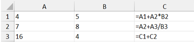</figure></div><div class="result-question-answer">Verilmiş Cavab: 71</div><div class="result-question-right">Doğru cavab: 71</div></li><li id="q360230" class="result-question empty"><div class="result-question-body"><p>UNICODE sistemində yığılmış 3 səhifədən ibarət olan informasiyanın həcmi 4200 baytdır. Hər səhifədəki informasiyanın həcmi özündən sonra gələn səhifədəki informasiyanın həcmindən 4 dəfə azdır. İkinci səhifədə neçə simvol olduğunu müəyyən edin.</p></div><div class="result-question-answer">Verilmiş Cavab: Boş</div><div class="result-question-right">Doğru cavab: 400</div></li><li id="q360234" class="result-question wrong"><div class="result-question-body"><p>Doğru fikirləri müəyyən edin.</p><p>1. Kredit kartlarının arxasında olan kodlaşdırılmış informasiyanı oxumaq üçün maqnetik skanerlərdən istifadə olunur.<br>2. Ekranın üfüqi və şaquli istiqamətlərdə nöqtələrinin sayı monitorun ekranının ölçüsünü müəyyən edir.<br>3. Matrisli printerlərdə iynələr dəsti görüntünü rəngləyici lent vasitəsilə kağıza vurur.<br>4. Matrisli printerlərin sürəti bir dəqiqədə çap etdikləri səhifələrin sayı ilə ölçülür.<br>5. "Enter, Esc, Home, End" klaviaturanın xidməti klavişlər qrupuna aiddir.<br>6. Funksional klavişlərin funksiyası proqramdan, yaxud iş rejimindən asılı olaraq dəyişə bilər.</p></div><div class="result-question-answer">Verilmiş Cavab: 156</div><div class="result-question-right">Doğru cavab: 136</div></li><li id="q360232" class="result-question empty"><div class="result-question-body"><p>Kompakt diskin tutumu 700 Mbaytdır (klaster ölçüsü 4 Kbayt). Ora 2 ədəd 1022 Kbaytlıq mətn faylı, 5 ədəd 2045 Kbaytlıq səs faylı, 14 ədəd 510 Kbaytlıq video faylı yazıldıqdan sonra, diskdə neçə Mbayt boş yer qaldı?</p></div><div class="result-question-answer">Verilmiş Cavab: Boş</div><div class="result-question-right">Doğru cavab: 681</div></li><li id="q360235" class="result-question empty"><div class="result-question-body"><p>Uyğunluğu müəyyən edin.</p><p>1. CX<sub>16</sub>=195<sub>10</sub><br>2. 111X01<sub>2</sub>=57<sub>10</sub><br>3. X3<sub>10</sub>=6X<sub>8</sub></p><p>a. X=4��������� b. X=5���������c. X=1<br>d. X=0������� � e. X=3</p></div><div class="result-question-answer">Verilmiş Cavab: Boş</div><div class="result-question-right">Doğru cavab: 1e2d3b</div></li><li id="q360241" class="result-question empty"><div class="result-question-body"><p>132 səhifəlik sənədin yalnız 1-ci, 11-ci, 21-ci və 132-ci səhifəsində qrafik təsvir var. Qrafik təsvir 256x256 piksel və 64 rəng çalarlı palitradan istifadə olunaraq hazırlanmışdır. Qalan səhifələrinin hər birində 64 sətir və hər sətrində 64 simvol olan mətn var və bu mətn ASCII standartında kodlaşdırıldığını bilərək sənədin ümumi həcmi neçə Kbayt olar?</p></div><div class="result-question-answer">Verilmiş Cavab:<br>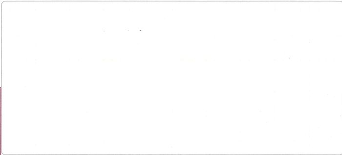<br></div><div class="result-question-explanation"><p>Cavab: 704 Kbayt</p><p>Sənədin 1, 11 , 21 və 132 – ci səhifəsində yəni 4 səhifəsində təsvir olduğu üçün təsvirin informasiya həcmini müəyyən edək:�<br>həcm=en*uzunluq*rəng dərinliyi<br>həcm=256*256*6 bit=2<sup>16</sup>*6 bit/2<sup>13�</sup>bit=48 Kbayt<br>Təsvir 4 səhifənin hər birində olduğu üçün 4*48 Kbayt=192 Kbayt<br>132 səhifəlik sənədin qalan 128 səhifəsində isə mətn olduğu üçün mətnin informasiya həcmini müəyyən edək:<br>həcm=səhifə sayı*hər səhifədəki sətir sayı*hər sətirdəki simvol sayı*verilmiş əlifbada minimal mümkün bir simvolun həcmi<br>həcm=128*64*64*1 bayt=2<sup>19</sup> bayt/2<sup>10</sup> bayt=512 Kbayt<br>Sənədin ümumu həcmi=Qrafik təsvir+Mətn=192 Kbayt+512 Kbayt=704 Kbayt</p><p>Meyar:</p><figure class="table"><table><tbody><tr><td>1 bal</td><td>a. Məsələ tamamilə doğru yazılmışdır.</td></tr><tr><td>1/2 bal</td><td>b. Hesablamanı doğru həll edib amma cavabı səhv yazıb;<br>c. Bütün əməliyyatların ardıcıllığı doğru göstərilib, lakin son nəticədə rəqəm səhvi və ya bir mərhələdə hesab səhvi edir;</td></tr><tr><td>0 bal</td><td>d. Məsələyə tamamilə yanlış həll yazılıb;<br>e. Başqa tapşırığın həlli yazılıb;<br>f. Digər bütün hallarda</td></tr></tbody></table></figure></div><div class="result-question-answer">Qiymətləndirmə: 0</div></li><li id="q360239" class="result-question empty"><div class="result-question-body"><p>260*252+17+8 ifadəsinin 2-lik say sistemindəki yazılışında sıfırların sayını müəyyən edin.</p></div><div class="result-question-answer">Verilmiş Cavab:<br>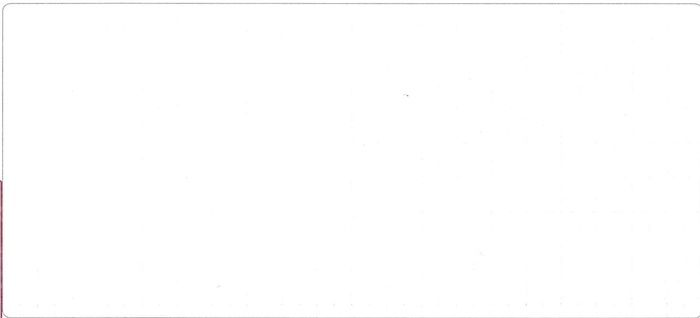<br></div><div class="result-question-explanation"><p>Cavab: 14</p><p>Həlli:�</p><p>Verilmiş ifadəni 2-lik say sistemində yazmaq üçün verilmiş ədədlərin hər birini 2 ədədinin qüvvətinə gətirməliyik.<br>(2<sup>8�</sup>+ 2<sup>2</sup>)*(2<sup>8</sup> – 2<sup>2</sup>) + 2<sup>4</sup> + 2<sup>0</sup> + 2<sup>3</sup> = 2<sup>16</sup> – 2<sup>4�</sup>+ 2<sup>4</sup> + 2<sup>0</sup> + 2<sup>3�</sup>�= 2<sup>16</sup> + 2<sup>3�</sup>+ 2<sup>0</sup><br>Alınmış ədədi 2-lik say sistemində təsvir etdikdə 17 rəqəmli ədəd alınır. 16, 3 və 0 mövqelərində dayanan rəqəmlər bir, digər 14 mövqedə dayanan rəqəmlər isə sıfırdır. Deməli, sıfırların sayı 14-dür.�</p><p>Meyar:</p><figure class="table"><table><tbody><tr><td>1 bal</td><td>a. Məsələ tamamilə doğru yazılmışdır;</td></tr><tr><td>1/2 bal</td><td>b. Hesablama zamanı addımlardan hansısa birində səhvə yol verib;<br>c. Addımlarda olan əməliyyatlar doğrudur, amma son nəticədə səhvə yol verilib;</td></tr><tr><td>0 bal</td><td>d. Məsələyə tamamilə yanlış həll yazılıb;<br>e. Başqa tapşırığın həlli yazılıb;<br>f. Digər bütün hallarda</td></tr></tbody></table></figure></div><div class="result-question-answer">Qiymətləndirmə: 0</div></li><li id="q360238" class="result-question wrong"><div class="result-question-body"><p>Hər biri 3 Kbayt həcmə malik 5 ədəd səs faylının, 5 Kbayt həcmə malik 4 ədəd mətn faylının diskdə ümumi həcminin neçə Kbayt olduğunu müəyyən edin (Klaster tutumu 4 Kbaytdır).</p></div><div class="result-question-answer">Verilmiş Cavab:<br>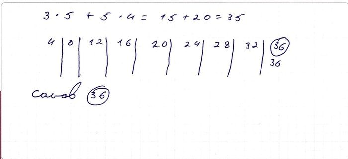<br></div><div class="result-question-explanation"><p>Cavab: 52</p><p>Həlli:</p><p>1 klasterin tutumu 4 Kbayt olarsa,�<br>3 Kbayt həcmə malik səs faylı diskdə 4 Kbayt yer tutar. Bu halda 5 ədəd səs faylı = 20 Kbayt<br>5 Kbayt həcmə malik mətn faylı diskdə 8 Kbayt yer tutar. Bu halda 4 ədəd mətn faylı = 32 Kbayt<br>20 Kbayt+32 Kbayt=52 Kbayt</p><p>Meyar:</p><figure class="table"><table><tbody><tr><td>1 bal</td><td>a. Məsələ tamamilə doğru yazılmışdır;</td></tr><tr><td>1/2 bal</td><td>b. Məsələnin addımlarında olan əməliyyatlar doğrudur, amma son nəticədə səhvə yol verilib;<br>c. Faylların həcmlərini ayrı-ayrı deyil bütov formada hesabladıqdan sonra diskdəki həcmi hesablayıb yazmışdır;</td></tr><tr><td>0 bal</td><td>d. Faylların həcmlərini sadəcə cəmləyib yazmışdır. (3*5+5*4 = 35 kimi);<br>e. Məsələyə tamamilə yanlış həll yazılıb;<br>f. Başqa tapşırığın həlli yazılıb;<br>g. Digər bütün hallarda</td></tr></tbody></table></figure></div><div class="result-question-answer">Qiymətləndirmə: 0</div></li></ul></li></ul></div></article><script id="MathJax-script" src="js/tex-mml-chtml.js"></script><script>!function(){const e=document.getElementById("navToggle"),t=document.getElementById("sidebar"),n=document.getElementById("sidebarOverlay"),c=document.getElementById("sidebarClose"),s=document.querySelectorAll(".exam-summary__question");function i(){t.classList.remove("open"),n.classList.remove("active")}e.addEventListener("click",(function(){t.classList.contains("open")?i():(t.classList.add("open"),n.classList.add("active"))})),c.addEventListener("click",i),n.addEventListener("click",i),s.forEach((function(e){e.addEventListener("click",(function(){setTimeout(i,100)}))}))}()</script><script>(function(){function c(){var b=a.contentDocument||a.contentWindow.document;if(b){var d=b.createElement('script');d.innerHTML="window.__CF$cv$params={r:'9cebf32ddc0044aa',t:'MTc3MTIzMzQyNQ=='};var a=document.createElement('script');a.src='/cdn-cgi/challenge-platform/scripts/jsd/main.js';document.getElementsByTagName('head')[0].appendChild(a);";b.getElementsByTagName('head')[0].appendChild(d)}}if(document.body){var a=document.createElement('iframe');a.height=1;a.width=1;a.style.position='absolute';a.style.top=0;a.style.left=0;a.style.border='none';a.style.visibility='hidden';document.body.appendChild(a);if('loading'!==document.readyState)c();else if(window.addEventListener)document.addEventListener('DOMContentLoaded',c);else{var e=document.onreadystatechange||function(){};document.onreadystatechange=function(b){e(b);'loading'!==document.readyState&&(document.onreadystatechange=e,c())}}}})();</script></body></html>
